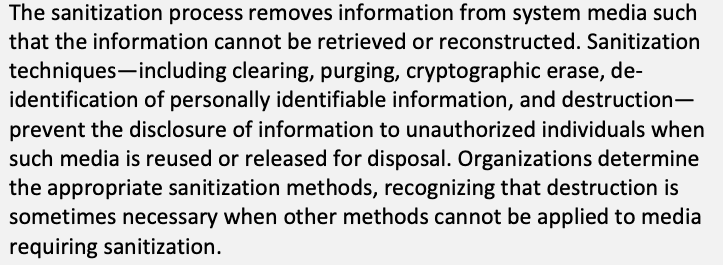
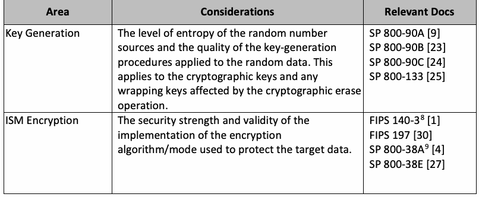
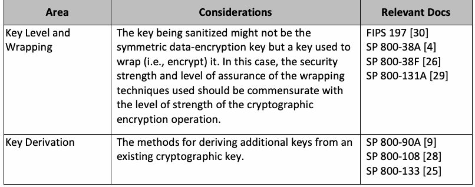
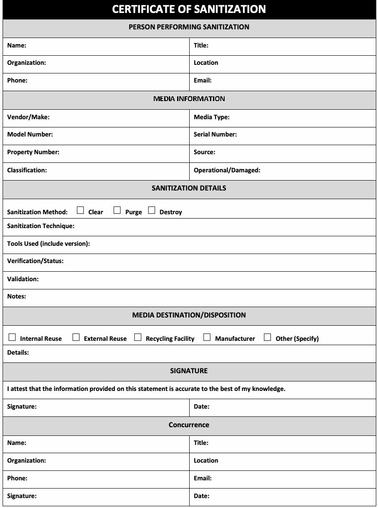

NIST Special Publication · PDF 原文抽出
Guidelines for Media Sanitization
媒体サニタイズに関する指針
NIST SP 800-88 Rev. 2（Guidelines for Media Sanitization）の英文と日本語訳を段落ごとに並べた閲覧用ページです。情報の機密性に応じた媒体サニタイズ計画の策定と、適切な消去・廃棄手法や管理策を示します。 翻訳は有志による非公式のもので、NIST および米国商務省が作成・承認・推奨したものではありません。要件の確認にはNIST の正式版 PDFを参照してください。
NIST Special Publication 800
NIST特別刊行物800
NIST SP 800-88r2
NIST SP 800-88r2
Guidelines for Media Sanitization
媒体サニタイズに関するガイドライン
Ramaswamy Chandramouli
Ramaswamy Chandramouli
Eric A. Hibbard
Eric A. Hibbard
This publication is available free of charge from: https://doi.org/10.6028/NIST.SP.800-88r2
本書は次のURLから無料で入手できる：https://doi.org/10.6028/NIST.SP.800-88r2
NIST Special Publication 800
NIST特別刊行物800
NIST SP 800-88r2
NIST SP 800-88r2
Guidelines for Media Sanitization
媒体サニタイズに関するガイドライン
Ramaswamy Chandramouli Computer Security Division Information Technology Laboratory
Ramaswamy Chandramouli 情報技術研究所 コンピュータセキュリティ部門
Eric A. Hibbard Samsung Semiconductor, Inc.
Eric A. Hibbard Samsung Semiconductor, Inc.
This publication is available free of charge from: https://doi.org/10.6028/NIST.SP.800-88r2
本書は次のURLから無料で入手できる：https://doi.org/10.6028/NIST.SP.800-88r2
September 2025
2025年9月
［米国商務省の紋章。公的な標章のため、この非公式サイトには掲載していない。原本 PDF を参照。］
U.S. Department of Commerce Howard Lutnick, Secretary
米国商務省 ハワード・ラトニック長官
National Institute of Standards and Technology
米国国立標準技術研究所（NIST）
Craig Burkhardt, Acting Under Secretary of Commerce for Standards and Technology and Acting NIST Director
クレイグ・バークハート、標準・技術担当商務次官代理およびNIST所長代理
Certain equipment, instruments, software, or materials, commercial or non-commercial, are identified in this paper in order to specify the experimental procedure adequately. Such identification does not imply recommendation or endorsement of any product or service by NIST, nor does it imply that the materials or equipment identified are necessarily the best available for the purpose.
実験手順を十分に特定するため、本書では商用または非商用の特定の機器、計器、ソフトウェア、または材料を識別している。これらを識別することは、NISTが製品またはサービスを推奨もしくは承認することを意味せず、また、識別された材料または機器が目的に対して必ずしも最良のものであることを意味しない。
There may be references in this publication to other publications currently under development by NIST in accordance with its assigned statutory responsibilities. The information in this publication, including concepts and methodologies, may be used by federal agencies even before the completion of such companion publications. Thus, until each publication is completed, current requirements, guidelines, and procedures, where they exist, remain operative. For planning and transition purposes, federal agencies may wish to closely follow the development of these new publications by NIST.
本書では、NISTが割り当てられた法定責任に従って現在策定中の他の刊行物を参照する場合がある。概念および方法論を含む本書の情報は、関連する刊行物が完成する前であっても、連邦機関が使用してよい。そのため、各刊行物が完成するまでは、既存の要件、ガイドライン、および手順は、存在する場合には引き続き有効である。計画および移行のため、連邦機関はNISTによるこれらの新刊行物の策定を注意深く追跡したいと考える場合がある。
Organizations are encouraged to review all draft publications during public comment periods and provide feedback to NIST. Many NIST cybersecurity publications, other than the ones noted above, are available at https://csrc.nist.gov/publications.
組織には、パブリックコメント期間中にすべての草案刊行物を確認し、NISTにフィードバックを提供することが推奨される。上記で言及したものを除き、多くのNISTサイバーセキュリティ刊行物は https://csrc.nist.gov/publications で入手できる。
Authority This publication has been developed by NIST in accordance with its statutory responsibilities under the Federal Information Security Modernization Act (FISMA) of 2014, 44 U.S.C. § 3551 et seq., Public Law (P.L.) 113-283. NIST is responsible for developing information security standards and guidelines, including minimum requirements for federal information systems, but such standards and guidelines shall not apply to national security systems without the express approval of appropriate federal officials exercising policy authority over such systems. This guideline is consistent with the requirements of the Office of Management and Budget (OMB) Circular A-130.
権限 本書は、2014年連邦情報セキュリティ近代化法（FISMA）、44 U.S.C. § 3551 et seq., Public Law (P.L.) 113-283に基づく法定責任に従い、NISTが策定した。NISTは、連邦情報システムの最低要件を含む情報セキュリティ標準およびガイドラインを策定する責任を負う。ただし、当該標準およびガイドラインは、該当システムに関する政策権限を行使する適切な連邦政府職員の明示的な承認がない限り、国家安全保障システムには適用されない。本ガイドラインは、行政管理予算局（OMB）通達A-130の要件に整合している。
Nothing in this publication should be taken to contradict the standards and guidelines made mandatory and binding on federal agencies by the Secretary of Commerce under statutory authority. Nor should these guidelines be interpreted as altering or superseding the existing authorities of the Secretary of Commerce, Director of the OMB, or any other federal official. This publication may be used by nongovernmental organizations on a voluntary basis and is not subject to copyright in the United States. Attribution would, however, be appreciated by NIST.
本書のいかなる内容も、法定権限に基づき商務長官が連邦機関に義務付け、拘束力を持たせた標準およびガイドラインに反するものと解釈してはならない。また、本ガイドラインは、商務長官、OMB長官、またはその他の連邦政府職員が有する既存の権限を変更または置き換えるものと解釈してはならない。本書は非政府組織が自主的に利用でき、米国内では著作権の対象ではない。ただし、NISTは出典を明記していただければ幸いである。
NIST Technical Series Policies Copyright, Use, and Licensing Statements NIST Technical Series Publication Identifier Syntax
NIST技術シリーズの方針／著作権、使用およびライセンスに関する声明／NIST技術シリーズ刊行物識別子の構文
Publication History Approved by the NIST Editorial Review Board on 2025-09-12 Supersedes NIST SP 800-88r1 (Revision 1) (December 2014) https://doi.org/10.6028/NIST.SP.800-88r1
刊行履歴 2025-09-12にNIST編集審査委員会が承認 NIST SP 800-88r1（改訂1、2014年12月）を置き換える：https://doi.org/10.6028/NIST.SP.800-88r1
How to Cite this NIST Technical Series Publication Chandramouli R, Hibbard EA (2025) Guidelines for Media Sanitization. (National Institute of Standards and Technology, Gaithersburg, MD), NIST Special Publication (SP) NIST SP 800-88r2. https://doi.org/10.6028/NIST.SP.800-88r2
本NIST技術シリーズ刊行物の引用方法 Chandramouli R、Hibbard EA（2025）『媒体サニタイズに関するガイドライン』（米国国立標準技術研究所、メリーランド州ゲイザースバーグ）、NIST特別刊行物（SP）NIST SP 800-88r2。https://doi.org/10.6028/NIST.SP.800-88r2
Author ORCID iDs Ramaswamy Chandramouli: 0000-0002-7387-5858 Eric Hibbard: 0009-0001-8112-1263
著者のORCID iD Ramaswamy Chandramouli: 0000-0002-7387-5858 Eric Hibbard: 0009-0001-8112-1263
Contact Information sp800-88-comments@nist.gov
連絡先 sp800-88-comments@nist.gov
National Institute of Standards and Technology Attn: Computer Security Division, Information Technology Laboratory 100 Bureau Drive (Mail Stop 8930) Gaithersburg, MD 20899-8930
米国国立標準技術研究所 宛先：情報技術研究所コンピュータセキュリティ部門 100 Bureau Drive (Mail Stop 8930) Gaithersburg, MD 20899-8930
Additional Information Additional information about this publication is available at https://csrc.nist.gov/pubs/sp/800/88/r2/final, including related content, potential updates, and document history.
追加情報 本刊行物の追加情報は https://csrc.nist.gov/pubs/sp/800/88/r2/final で入手できる。関連コンテンツ、更新の可能性、および文書履歴が含まれる。
All comments are subject to release under the Freedom of Information Act (FOIA).
すべてのコメントは、情報公開法（FOIA）に基づく公開の対象となる。
Abstract
要旨
Media sanitization refers to a process that renders access to target data on the media infeasible for a given level of effort. This guide will assist organizations and system owners in setting up a media sanitization program with proper and applicable techniques and controls for sanitization and disposal based on the sensitivity of their information.
媒体サニタイズとは、所定の労力を費やしても媒体上の対象データにアクセスできない状態にするプロセスを指す。本ガイドは、情報の機微性に基づき、適切で適用可能なサニタイズおよび処分の技法と管理策を用いて、組織やシステム所有者が媒体サニタイズプログラムを構築するのを支援する。
Keywords
キーワード
Cryptographic erase; ensuring confidentiality; media sanitization; media sanitization program; media types; sanitization methods; secure erase.
暗号消去；機密性の確保；媒体サニタイズ；媒体サニタイズプログラム；媒体の種類；サニタイズ方法；セキュアイレース。
Reports on Computer Systems Technology
コンピュータシステム技術に関する報告書
The Information Technology Laboratory (ITL) at the National Institute of Standards and Technology (NIST) promotes the U.S. economy and public welfare by providing technical leadership for the Nation’s measurement and standards infrastructure. ITL develops tests, test methods, reference data, proof of concept implementations, and technical analyses to advance the development and productive use of information technology. ITL’s responsibilities include the development of management, administrative, technical, and physical standards and guidelines for the cost-effective security and privacy of other than national security-related information in federal information systems. The Special Publication 800-series reports on ITL’s research, guidelines, and outreach efforts in information system security, and its collaborative activities with industry, government, and academic organizations.
米国国立標準技術研究所（NIST）の情報技術研究所（ITL）は、国家の計量・標準基盤に技術的なリーダーシップを発揮し、米国経済と公共の福祉を促進している。ITLは、情報技術の発展と生産的な利用を推進するため、試験、試験方法、参照データ、概念実証の実装、および技術分析を開発する。ITLの責務には、連邦情報システムにおける国家安全保障関連以外の情報を費用対効果の高い方法で保護し、プライバシーを守るための管理的、行政的、技術的、および物理的な標準とガイドラインの策定が含まれる。特別刊行物800シリーズは、情報システムセキュリティに関するITLの研究、ガイドライン、普及活動、および産業界、政府、学術機関との協働活動を報告する。
Patent Disclosure Notice
特許開示に関する通知
NOTICE: ITL has requested that holders of patent claims whose use may be required for compliance with the guidance or requirements of this publication disclose such patent claims to ITL. However, holders of patents are not obligated to respond to ITL calls for patents and ITL has not undertaken a patent search in order to identify which, if any, patents may apply to this publication.
通知：ITLは、本刊行物のガイダンスまたは要件を順守するために使用が必要となる可能性のある特許請求の範囲を有する特許保有者に対し、当該請求の範囲をITLに開示するよう要請している。ただし、特許保有者はITLからの特許に関する照会に回答する義務を負わず、ITLは本刊行物に適用される可能性のある特許を特定するための特許調査を行っていない。
As of the date of publication and following call(s) for the identification of patent claims whose use may be required for compliance with the guidance or requirements of this publication, no such patent claims have been identified to ITL.
刊行日現在、本刊行物のガイダンスまたは要件を順守するために使用が必要となる可能性のある特許請求の範囲の特定を求める照会を行った結果、そのような請求の範囲はITLに特定されていない。
No representation is made or implied by ITL that licenses are not required to avoid patent infringement in the use of this publication.
本刊行物の利用において特許侵害を避けるためのライセンスが不要であることを、ITLが表明または示唆するものではない。
Table of Contents
目次
Executive Summary — 1
エグゼクティブサマリー — 1
1. Introduction — 2
1. 序論 — 2
2. Background — 5
2. 背景 — 5
3. Summary of Sanitization Methods — 8
3. サニタイズ方法の概要 — 8
3.1. Sanitization Methods — 8
3.1. サニタイズ方法 — 8
3.1.1. Clear Sanitization Method — 8
3.1.1. クリアのサニタイズ方法 — 8
3.1.2. Purge Sanitization Method — 10
3.1.2. パージのサニタイズ方法 — 10
3.1.3. Destroy Sanitization Method — 11
3.1.3. 破壊のサニタイズ方法 — 11
3.2. Use of Cryptography and Cryptographic Erase — 11
3.2. 暗号および暗号消去の使用 — 11
3.2.1. Strength of Cryptography for CE — 12
3.2.1. 暗号消去のための暗号強度 — 12
3.2.2. Applicability of CE — 13
3.2.2. CEの適用可能性 — 13
3.2.3. Sanitization of Keys — 13
3.2.3. 鍵のサニタイズ — 13
3.2.4. Quality of Cryptographic Implementations — 15
3.2.4. 暗号実装の品質 — 15
3.2.5. Traceability of CE Operations — 16
3.2.5. CE操作の追跡可能性 — 16
4. Media Sanitization Program — 18
4. 媒体サニタイズプログラム — 18
4.1. Storage Sanitization Policy — 18
4.1. ストレージサニタイズ方針 — 18
4.2. Sanitization Scope — 18
4.2. サニタイズの適用範囲 — 18
4.3. Storage Sanitization and Disposition Decision Framework — 19
4.3. ストレージサニタイズおよび処分の判断枠組み — 19
4.3.1. Information Decisions in the System Life Cycle — 20
4.3.1. システムライフサイクルにおける情報に関する判断 — 20
4.3.2. Determination of Security Categorization — 21
4.3.2. セキュリティ分類の決定 — 21
4.3.3. Reuse of Media — 22
4.3.3. 媒体の再利用 — 22
4.3.4. Control of Media — 22
4.3.4. 媒体の管理 — 22
4.3.5. Data Protection Level — 23
4.3.5. データ保護レベル — 23
4.3.6. Sanitization and Disposal Decision — 23
4.3.6. サニタイズおよび処分に関する判断 — 23
4.4. Performing Sanitization — 23
4.4. サニタイズの実施 — 23
4.5. Sanitization Assurance — 24
4.5. サニタイズの保証 — 24
4.5.1. Sanitization Verification — 24
4.5.1. サニタイズの検証 — 24
4.5.2. Sanitization Validation — 24
4.5.2. サニタイズの妥当性確認 — 24
4.6. Documentation — 25
4.6. 文書化 — 25
4.7. Roles and Responsibilities — 26
4.7. 役割と責任 — 26
4.7.1. Program Managers/Agency Heads — 27
4.7.1. プログラム管理者／機関長 — 27
4.7.2. Chief Information Officer (CIO) — 27
4.7.2. 最高情報責任者（CIO） — 27
4.7.3. Information System Owner — 27
4.7.3. 情報システム所有者 — 27
4.7.4. Information Owner/Steward — 27
4.7.4. 情報所有者／管理責任者 — 27
4.7.5. Senior Agency Information Security Officer (SAISO) — 27
4.7.5. 上級機関情報セキュリティ責任者（SAISO） — 27
4.7.6. System Security Manager/Officer — 27
4.7.6. システムセキュリティ管理者／担当官 — 27
4.7.7. Property Management Officer — 28
4.7.7. 資産管理担当官 — 28
4.7.8. Records Management Officer — 28
4.7.8. 記録管理担当官 — 28
4.7.9. Privacy Officer — 28
4.7.9. プライバシー担当官 — 28
4.7.10. Users — 28
4.7.10. 利用者 — 28
References — 29
参考文献 — 29
Appendix A. Glossary — 32
付録A. 用語集 — 32
Appendix B. Device-Specific Characteristics of Interest — 35
付録B. 関心の対象となるデバイス固有の特性 — 35
Appendix C. Sample “Certificate of Sanitization” Form — 36
付録C. 「サニタイズ証明書」記入例 — 36
Appendix D. Change Log — 38
付録D. 変更履歴 — 38
List of Tables
表一覧
Table 1. CE considerations — 12
表1. CEに関する考慮事項 — 12
List of Figures
図一覧
Fig. 1. Sanitization and disposition decision flow — 20
図1. サニタイズおよび処分の判断フロー — 20
Fig. 2. Certificate of sanitization — 37
図2. サニタイズ証明書 — 37
Acknowledgments
謝辞
The authors would like to thank Richard Kissel, Andrew Regenscheid, Matthew Scholl, and Kevin Stine for their work on the original version and the first revision of this publication. The authors would also like to thank Steven Skolochenko and Xing Li for their contributions to the original version of this publication. The authors would also like to thank Jim Foti and Isabel Van Wyk for their exceptional editing skills and thorough review of this document; their work made this a much better document. Thanks to their diligent and detailed reviews, we expect this document to serve as a useful guide for developing an effective media sanitization program.
著者は、本刊行物の初版および初回改訂版に携わったRichard Kissel、Andrew Regenscheid、Matthew Scholl、Kevin Stineに感謝する。また、初版への貢献に対してSteven SkolochenkoおよびXing Liに感謝する。さらに、卓越した編集技術と徹底したレビューを提供し、本書を大きく改善したJim FotiおよびIsabel Van Wykに感謝する。これらの丹念で詳細なレビューのおかげで、本書は効果的な媒体サニタイズプログラムを策定するための有用なガイドになると期待している。
Executive Summary
エグゼクティブサマリー
Protecting the confidentiality of information should be a concern for everyone, from federal agencies and businesses to home users. Media disposition and sanitization decisions need to consider the confidentiality obligations associated with recording or storing sensitive information on hard copy media or information storage media (ISM). To help ensure media disposition and sanitization are effective and traceable, consideration should be given to implementing a media sanitization program.
情報の機密性の保護には、連邦機関や企業から家庭の利用者に至るまで、すべての人が関心を持つべきである。媒体の処分およびサニタイズに関する判断では、ハードコピー媒体または情報記憶媒体（ISM）に機微情報を記録または保存することに伴う機密保持上の義務を考慮する必要がある。媒体の処分およびサニタイズを効果的かつ追跡可能なものにするため、媒体サニタイズプログラムの導入を検討すべきである。
The modern storage environment is rapidly evolving. Data may pass through multiple organizations, systems, and ISM in its lifetime. Data propagation has continued to increase as the internet and data storage systems have moved toward a distributed cloud-based architecture. As a result, more parties are responsible for effectively sanitizing ISM (i.e., eliminating sensitive data), and the potential is substantial for sensitive data to be collected and retained on the ISM. This responsibility lies with organizations that are originators (i.e., sources), users, and final resting places (e.g., archives) of sensitive data, as well as intermediaries who transiently store or process the information along the way. Efficient and effective information management from origination through disposition is the responsibility of all those who have handled the data.
現代のストレージ環境は急速に変化している。データはそのライフサイクル中に複数の組織、システム、およびISMを経由することがある。インターネットおよびデータストレージシステムが分散型のクラウドベースアーキテクチャへ移行するにつれ、データの伝播は増加し続けている。その結果、ISMを効果的にサニタイズ（すなわち機微データを除去）する責任を負う当事者が増え、ISM上に機微データが収集・保持される可能性も大きくなっている。この責任は、機微データの発生源（すなわち起点）、利用者、最終的な保管先（例：アーカイブ）となる組織に加え、途中で情報を一時的に保存または処理する仲介者にも及ぶ。データの発生から処分まで、効率的かつ効果的に情報を管理する責任は、データを取り扱ったすべての者が負う。
Sophisticated access controls and encryption help reduce the likelihood that an attacker can gain direct access to sensitive data. As a result, parties that attempt to obtain sensitive data may focus their efforts on alternative access means, such as retrieving residual data on ISM that has left an organization without being sufficiently sanitized. Consequently, effective sanitization techniques and the tracking of ISM are critical to ensuring that sensitive data is protected against unauthorized disclosure, whether that information is on paper, optical, electronic or magnetic media, or complex storage systems (e.g., cloud).
高度なアクセス制御と暗号化は、攻撃者が機微データへ直接アクセスする可能性を低減する。その結果、機微データを取得しようとする者は、十分にサニタイズされないまま組織の管理を離れたISM上の残留データを取得するなど、別のアクセス手段に注目する可能性がある。したがって、紙、光学媒体、電子媒体、磁気媒体、または複雑なストレージシステム（例：クラウド）上の情報を未承認の開示から保護するには、効果的なサニタイズ技法とISMの追跡が不可欠である。
An organization may choose to dispose of ISM by charitable donation, internal or external transfer, or recycling if that ISM is obsolete or no longer usable. Even internal transfers require increased scrutiny in compliance with legal and regulatory obligations for sensitive data, such as personally identifiable information (PII). Regardless of the ISM’s final intended destination, organizations should use approved sanitization methods and techniques to ensure that no reconstructible residual representation of the sensitive data is stored on ISM that has left the control of the organization.
組織は、ISMが旧式化または使用不能となった場合、慈善寄付、内部または外部への移転、あるいはリサイクルによって処分することを選択できる。内部移転であっても、個人を特定できる情報（PII）などの機微データに関する法令・規制上の義務への適合について、より厳格な確認が必要である。ISMの最終的な移転先にかかわらず、組織の管理下を離れたISMに機微データの再構成可能な残存表現が保存されていないことを確保するため、承認済みのサニタイズ方法および技法を用いるべきである。
Sanitization refers to a process that renders access to target data on the media infeasible for a given level of effort (i.e., constraints on time, budget, and resources). This document outlines the important elements of a media sanitization program to assist organizations and system owners in making practical sanitization decisions based on the sensitivity of their information. While this document does not and cannot specifically address all known types of media, the described sanitization decision process can be applied universally.
サニタイズとは、所定の労力（すなわち時間、予算、およびリソースの制約）を費やしても媒体上の対象データにアクセスできない状態にするプロセスを指す。本書は、情報の機微性に基づいて実用的なサニタイズ判断を行えるよう、媒体サニタイズプログラムの重要な要素を示し、組織およびシステム所有者を支援する。本書は既知のあらゆる媒体の種類を個別に扱うものではなく、また扱うこともできないが、ここで説明するサニタイズ判断プロセスは普遍的に適用できる。
1. Introduction
1. 序論
1.1. Purpose and Scope
1.1. 目的と適用範囲
The information security concern regarding disposal and sanitization revolves around the recorded information rather than the media itself. The media used on an information system (i.e., ISM) should be assumed to contain information commensurate with the security categorization (low, moderate, or high) of the system’s confidentiality. If not handled properly, the release of such ISM could lead to the unauthorized disclosure of information. Categorizing an information technology (IT) system in accordance with Federal Information Processing Standards (FIPS) Publication 199, Standards for Security Categorization of Federal Information and Information Systems [2], is the critical first step in understanding and managing system information and media.
処分およびサニタイズに関する情報セキュリティ上の懸念は、媒体そのものではなく、記録された情報に関係する。情報システムで使用する媒体（すなわちISM）には、そのシステムの機密性に関するセキュリティ分類（低、中、高）に相応する情報が含まれているものと想定する必要がある。適切に取り扱わなければ、そのようなISMの引き渡しにより、情報が未承認で開示されるおそれがある。連邦情報処理標準（FIPS）刊行物199『連邦情報および情報システムのセキュリティ分類標準』[2]に従って情報技術（IT）システムを分類することは、システム情報および媒体を理解し管理するための重要な第一歩である。
Based on the results of categorization, the system owner should refer to NIST Special Publication (SP) 800-53r5 (Revision 5), Security and Privacy Controls for Information Systems and Organizations [5], which states:
分類結果に基づき、システム所有者はNIST特別刊行物（SP）800-53r5（改訂5）『情報システムおよび組織のためのセキュリティおよびプライバシー管理策』[5]を参照すべきである。同文書には次の記載がある：
原本PDFの抜粋画像

This document will assist organizations in implementing a media sanitization program for media before disposal, reuse, or leaving the effective control of an organization. Proper and applicable techniques and controls for sanitization and disposal decisions consider the security categorization of the associated system’s confidentiality. Organizations should develop and use a media sanitization program that is aligned with the guidelines in this document to make effective, risk-based decisions on the ultimate sanitization and/or disposition of media and data throughout the system life cycle.
本書は、媒体が処分、再利用、または組織の実効的な管理下を離れる前に、その媒体に対するサニタイズプログラムを実施する組織を支援する。サニタイズおよび処分の判断のための適切で適用可能な技法と管理策では、関連システムの機密性に関するセキュリティ分類を考慮する。組織は、本書のガイドラインに整合した媒体サニタイズプログラムを策定し、利用して、システムライフサイクル全体を通じた媒体およびデータの最終的なサニタイズおよび／または処分について、効果的かつリスクに基づく判断を行うべきである。
Before applying any sanitization efforts to ISM, information system owners are strongly advised to consult with designated officials with privacy responsibilities (e.g., privacy officers), Freedom of Information Act (FOIA) officers, and/or local records retention offices to ensure compliance with record retention regulations and requirements in the Federal Records Act.1 Organizational management should also be consulted to ensure that historical information is captured and maintained as required by business needs. Controls may need to be adjusted as the system and its environment of operation change.
ISMにサニタイズを適用する前に、情報システム所有者は、記録保存に関する規制および連邦記録法の要件への適合を確保するため、プライバシーに関する責任を担う指定職員（例：プライバシー担当官）、情報公開法（FOIA）担当官、および／または地域の記録保存担当部門に相談するよう強く勧められる。1業務上の必要に応じて履歴情報が取得・保持されることを確実にするため、組織の管理者にも相談すべきである。システムおよびその運用環境の変化に応じて、管理策の調整が必要となる場合がある。
1.2. Audience
1.2. 想定読者
Protecting the confidentiality of information should be a concern for everyone, from federal agencies and businesses to home users. Interconnections and information exchanges are critical to the delivery of government services, and the guidelines in this document can inform decisions regarding sanitization and disposal processes.
情報の機密性の保護は、連邦機関や企業から家庭の利用者に至るまで、すべての人にとって重要な課題である。政府サービスの提供には相互接続と情報交換が不可欠であり、本書のガイドラインはサニタイズおよび処分プロセスに関する判断に役立てることができる。
1.3. Assumptions
1.3. 前提
This document presumes that organizations can correctly identify appropriate information categories, confidentiality impact levels, and information locations. Ideally, this activity is accomplished in the earliest phase of the system life cycle [8]. This critical initial step is outside of the scope of this document, but without this identification, the organization will likely lose control of some ISM containing sensitive data.
本書では、組織が適切な情報カテゴリ、機密性への影響レベル、および情報の所在を正しく特定できることを前提とする。理想的には、この作業はシステムライフサイクルの最初期段階で実施される[8]。この重要な初期ステップは本書の適用範囲外であるが、これらを特定しなければ、機微データを含む一部のISMを組織が管理できなくなる可能性が高い。
This document does not claim to cover all possible media that an organization could use to store or record information, nor does it attempt to forecast future media that may be developed. Organizations and users are expected to make sanitization and disposal decisions based on the security categorization of the information contained in the media.
本書は、組織が情報を保存または記録するために使用し得るあらゆる媒体を網羅すると主張するものではなく、今後開発される可能性のある媒体を予測するものでもない。組織および利用者は、媒体に含まれる情報のセキュリティ分類に基づいて、サニタイズおよび処分を判断することが期待される。
1.4. Relationship With Other NIST Documents
1.4. 他のNIST文書との関係
The following NIST documents, including FIPS and Special Publications, are directly related to this document:
以下のNIST文書（FIPSおよび特別刊行物を含む）は、本書に直接関連する：
•FIPS 199 [2] and SP 800-60r2, Guide for Mapping Types of Information and Systems to Security Categories [7], provide guidance for establishing the security categorization for a system’s confidentiality. This categorization will impact the level of assurance that an organization should require when making sanitization decisions.
•FIPS 199 [2]およびSP 800-60r2『情報およびシステムの種類をセキュリティカテゴリに対応付けるためのガイド』[7]は、システムの機密性に関するセキュリティ分類を確立するためのガイダンスを示す。この分類は、サニタイズの判断時に組織が要求すべき保証レベルに影響する。
•FIPS 200, Minimum Security Requirements for Federal Information and Information Systems [3], establishes baseline security requirements for organizations to have a media sanitization program.
•FIPS 200『連邦情報および情報システムの最低セキュリティ要件』[3]は、組織が媒体サニタイズプログラムを設けるための基本的なセキュリティ要件を定める。
•FIPS 140-3, Security Requirements for Cryptographic Modules [1], establishes a standard for cryptographic modules used by the U.S. Government.
•FIPS 140-3『暗号モジュールのセキュリティ要件』[1]は、米国政府が使用する暗号モジュールの標準を定める。
•SP 800-53r5 [5] provides minimum recommended security controls, including sanitization, for federal systems based on their overall system security categorization.
•SP 800-53r5 [5]は、システム全体のセキュリティ分類に基づき、サニタイズを含む連邦システム向けの最低限の推奨セキュリティ管理策を示す。
•SP 800-53Ar5, Guide for Assessing the Security Controls in Federal Information Systems and Organizations: Building Effective Security Assessment Plans [6], provides guidelines for assessing security controls, including sanitization, for federal systems based on their overall system security categorization.
•SP 800-53Ar5『連邦情報システムおよび組織のセキュリティ管理策評価ガイド：効果的なセキュリティ評価計画の構築』[6]は、システム全体のセキュリティ分類に基づき、サニタイズを含む連邦システムのセキュリティ管理策を評価するためのガイドラインを示す。
•SP 800-111, Guide to Storage Encryption Technologies for End User Devices [10], provides guidelines for selecting and using storage encryption technologies.
•SP 800-111『エンドユーザーデバイス向けストレージ暗号化技術ガイド』[10]は、ストレージ暗号化技術の選択および使用に関するガイドラインを示す。
•SP 800-122, Guide to Protecting the Confidentiality of Personally Identifiable Information (PII) [11], provides guidelines for protecting the confidentiality of PII in information systems.
•SP 800-122『個人を特定できる情報（PII）の機密性を保護するためのガイド』[11]は、情報システムにおけるPIIの機密性を保護するためのガイドラインを示す。
1.5. Document Structure
1.5. 文書の構成
This document is divided into the following sections and appendices:
本書は以下のセクションおよび付録で構成される：
•Section 1 describes this document’s purpose, scope, audience, assumptions, relationship to other NIST documents, and structure.
•セクション1では、本書の目的、適用範囲、想定読者、前提、他のNIST文書との関係、および構成について説明する。
•Section 2 presents an overview of the need for sanitization and the basic types of information, sanitization, and media.
•セクション2では、サニタイズの必要性ならびに情報、サニタイズ、および媒体の基本的な種類の概要を示す。
•Section 3 provides an overview of sanitization methods.
•セクション3では、サニタイズ方法の概要を示す。
•Section 4 summarizes a general media sanitization program.
•セクション4では、一般的な媒体サニタイズプログラムを要約する。
•The References section provides a detailed list of citations.
•参考文献セクションには、引用文献の詳細な一覧を示す。
•Appendix A defines important terms used in this document.
•付録Aでは、本書で使用する重要な用語を定義する。
•Appendix B identifies a set of device-specific characteristics of interest that users should request from ISM vendors.
•付録Bでは、利用者がISMベンダーに提示を求めるべき、関心の対象となるデバイス固有の特性をまとめる。
•Appendix C provides a sample Certificate of Sanitization form for documenting an organization’s sanitization activities.
•付録Cでは、組織のサニタイズ活動を記録するためのサニタイズ証明書の記入例を示す。
2. Background
2. 背景
Information disposition and sanitization decisions occur throughout the information system life cycle. Critical factors that affect information disposition and media sanitization are decided at the start of a system’s development. Initial system requirements should include hardware and software specifications as well as interconnections and data flow documents that will assist the system owner in identifying the types of ISM used in the system. Some ISM support enhanced interface commands for sanitization, which may make sanitization easier, faster, and more effective. The decision may be even more fundamental because effective sanitization procedures may not yet have been determined for emerging ISM types. Without an effective command or interface-based sanitization technique, the ISM may have to be destroyed. In that event, the ISM cannot be reused by other organizations that could have benefited from receiving the repurposed ISM.
情報システムのライフサイクル全体を通じて、情報の処分およびサニタイズに関する判断が行われる。情報の処分および媒体サニタイズに影響する重要な要因は、システム開発の開始時に決定される。初期のシステム要件には、ハードウェアおよびソフトウェアの仕様に加え、システム所有者がシステムで使用するISMの種類を特定する助けとなる、相互接続およびデータフローに関する文書を含めるべきである。一部のISMはサニタイズ用の拡張インターフェースコマンドをサポートしており、サニタイズをより容易、迅速かつ効果的に行えることがある。新しい種類のISMでは効果的なサニタイズ手順がまだ確立されていない場合があるため、判断はさらに根本的なものとなる可能性がある。効果的なコマンドベースまたはインターフェースベースのサニタイズ技法がない場合、ISMを破壊しなければならないことがある。その場合、転用されたISMを受け取ることで恩恵を得られたはずの他の組織は、そのISMを再利用できない。
During the requirements phase, other types of ISM that will be used to create, capture, or transfer information used by the system should be identified. This analysis balances business needs and confidentiality risks in compliance with FIPS 200 [3]. While media sanitization and information disposition activities primarily occur during the disposal phase of the system life cycle, many types of ISM containing data will be transferred outside of the positive control of the organization throughout the life of an information system (e.g., for maintenance, system upgrades, or during a configuration update).
要件定義段階では、システムが使用する情報の作成、取得、または転送に用いる他の種類のISMも特定すべきである。この分析では、FIPS 200 [3]に準拠しつつ、業務上の必要性と機密性のリスクを調整する。媒体のサニタイズと情報の処分は主にシステムライフサイクルの処分段階で行われるが、情報システムのライフサイクルを通じて、データを含む多くの種類のISMが組織の実効的な管理を離れて移転される（例：保守、システム更新、構成更新の際）。
2.1. Need for Proper Information Disposition and Media Sanitization
2.1. 適切な情報処分および媒体サニタイズの必要性
Media sanitization is key to ensuring confidentiality, which is defined as “preserving authorized restrictions on information access and disclosure, including means for protecting personal privacy and proprietary information…” [22]. Additionally, “a loss of confidentiality is the unauthorized disclosure of information” [2].
媒体サニタイズは機密性を確保するうえで重要である。機密性とは、「個人のプライバシーおよび専有情報を保護する手段を含め、情報へのアクセスおよび開示に関する承認済みの制限を維持すること…」と定義される[22]。また、「機密性の喪失とは、情報が未承認で開示されることである」[2]。
The unauthorized disclosure of sensitive and/or regulated information often constitutes the basis of a data breach, which can necessitate undesirable data breach notifications and other remedies. In some jurisdictions, simply losing control of sensitive information is enough to be considered a data breach. Understanding where this sensitive information is stored and systematically tracking the media on which it is stored can be important safeguards against data breaches.
機微情報および／または規制対象情報の未承認開示は、多くの場合データ侵害の根拠となり、望ましくない侵害通知やその他の救済措置を必要とすることがある。一部の法域では、機微情報の管理を失うだけでデータ侵害とみなされる。機微情報がどこに保存されているかを把握し、その情報を保存する媒体を体系的に追跡することは、データ侵害に対する重要な保護策となり得る。
For organizations to have appropriate controls on the information for which they are responsible, they must properly safeguard used media. Potential misuse of information collection can result from improperly disposed hard copy media, the acquisition of improperly sanitized ISM, or laboratory reconstruction of ISM sanitized in a manner that is not commensurate with the confidentiality of information stored on that media. Media flows in and out of organizational control through recycle bins, out to vendors for equipment repairs, and swapped into other systems in response to hardware or software failures. This potential vulnerability can be mitigated by properly understanding where information is located and how to protect it.
組織が責任を負う情報に適切な管理策を適用するには、使用済み媒体を適切に保護する必要がある。情報収集が不適切に利用される可能性は、不適切に処分されたハードコピー媒体、不十分にサニタイズされたISMの取得、または媒体に保存された情報の機密性に見合わない方法でサニタイズされたISMを実験室で再構成することから生じ得る。媒体は、ごみ箱を通じて、機器修理のためにベンダーへ送られて、またはハードウェアもしくはソフトウェアの障害に対応して他のシステムへ移されることで、組織の管理下に出入りする。この潜在的な脆弱性は、情報の所在とその保護方法を適切に把握することで軽減できる。
2.2. Types of Media
2.2. 媒体の種類
This document focuses on two primary types of media in common use:
本書は、一般的に使用される次の2種類の媒体に焦点を当てる：
•Hard copy. Hard copy media refers to physical representations of information, typically paper printouts, film, microfiche, etc. However, printer and facsimile ribbons, drums, and platens are also examples of hard copy media. The supplies associated with producing paper printouts are often the most uncontrolled. Hard copy materials containing sensitive data that leave an organization without effective sanitization expose a significant vulnerability to “dumpster divers” and overcurious employees.
•ハードコピー。ハードコピー媒体とは、通常、紙の印刷物、フィルム、マイクロフィッシュなど、情報を物理的に表現したものを指す。プリンターやファクシミリのリボン、ドラム、プラテンもハードコピー媒体の例である。紙の印刷物を作成するための消耗品は、管理が最も行き届かないことが多い。効果的なサニタイズを行わずに組織外へ持ち出される機微データを含むハードコピー資料は、「ごみ箱あさり」をする者や好奇心の強すぎる従業員に対する大きな脆弱性となる。
•Information storage media (ISM). ISM commonly2 takes the form of:
•情報記憶媒体（ISM）。ISMは一般に次の形態をとる：2
•Devices that contain bits and bytes, such as hard disk drives (HDDs), solid state drives (SSDs), random access memory (RAM), read-only memory (ROM), optical disks, magnetic tape, flash memory, memory devices, phones, mobile computing devices, networking devices, and office equipment
•ビットおよびバイトを格納するデバイス。例：ハードディスクドライブ（HDD）、ソリッドステートドライブ（SSD）、ランダムアクセスメモリ（RAM）、読み取り専用メモリ（ROM）、光ディスク、磁気テープ、フラッシュメモリ、メモリデバイス、電話機、モバイルコンピューティングデバイス、ネットワークデバイス、およびオフィス機器。
•Systems that provide “virtual” or “logical” storage that abstracts the underlying electronic media (e.g., cloud storage, object storage)
•基盤となる電子媒体を抽象化した「仮想」または「論理」ストレージを提供するシステム（例：クラウドストレージ、オブジェクトストレージ）。
ISM can be volatile/non-persistent storage (i.e., fails to retain its contents after power is removed) or non-volatile/persistent storage (i.e., retains its contents after power is removed). This latter type of ISM is where most organizations should focus their sanitization efforts.
ISMには、揮発性／非永続ストレージ（すなわち電源を切ると内容を保持できないもの）と、不揮発性／永続ストレージ（すなわち電源を切っても内容を保持するもの）がある。後者のISMこそ、ほとんどの組織がサニタイズの取り組みの重点を置くべき対象である。
2.3. Target of Sanitization
2.3. サニタイズの対象
In general, sanitization safeguards the confidentiality of sensitive information that is stored on media by eliminating either the information on the media or the underlying media itself. This sensitive information is the target of sanitization activities. When considering hard copy, all sanitization activities focus on the proper elimination of the media. For ISM, sensitive information is stored as data on media and can constitute some or all of the user data stored on the ISM. If the target data cannot be selectively or partially sanitized, sanitization operations should be expanded to cover all user data instead (see Sec. 4.2).
一般に、サニタイズは媒体上の情報またはその基盤となる媒体自体を除去することにより、媒体に保存された機微情報の機密性を保護する。この機微情報がサニタイズ活動の対象となる。ハードコピーの場合、すべてのサニタイズ活動は媒体を適切に除去することに重点を置く。ISMの場合、機微情報は媒体上のデータとして保存され、ISM上に保存されたユーザーデータの一部または全部を構成し得る。対象データを選択的または部分的にサニタイズできない場合は、サニタイズ操作の対象をすべてのユーザーデータに広げるべきである（4.2節参照）。
Some types of ISM can contain more physical storage than the user addressable capacity (e.g., overprovisioning) for endurance and performance purposes. For example, an ISM can have 1024 GB of total physical capacity but only 900 GB of available capacity (i.e., user accessible storage). If the ISM implements data reduction techniques (e.g., data compression) internally, it is also possible for the user-addressable capacity to exceed the total physical capacity. In either case, user data may be stored on the full 1024 GB because of the mechanisms in the ISM, and the entire contents should be sanitized.
一部のISMは、耐久性や性能のために、ユーザーがアドレス指定できる容量を超える物理ストレージを備えている場合がある（例：オーバープロビジョニング）。たとえば、ISMの物理容量は合計1,024 GBであっても、利用可能な容量（すなわちユーザーがアクセスできるストレージ）は900 GBの場合がある。ISMが内部でデータ削減技術（例：データ圧縮）を実装している場合は、ユーザーがアドレス指定できる容量が物理容量の合計を上回ることもある。どちらの場合も、ISMの仕組みによりユーザーデータが1,024 GB全体に保存されている可能性があるため、内容全体をサニタイズすべきである。
2.4. Factors Influencing Sanitization and Disposal Decisions
2.4. サニタイズおよび処分の判断に影響する要因
When making sanitization decisions for ISM, several factors should be considered along with the security categorization of the system confidentiality. The cost versus benefit trade-off of a sanitization process should be understood prior to a final decision. Organizations retain the ability to increase the level of sanitization applied if that is reasonable and indicated by an assessment of the existing risk.
ISMのサニタイズを判断する際は、システムの機密性に関するセキュリティ分類とあわせて複数の要因を考慮すべきである。最終判断の前に、サニタイズプロセスの費用と便益のトレードオフを理解しておくべきである。既存リスクの評価に照らして合理的かつ必要である場合、組織は適用するサニタイズの水準を高めることができる。
Organizations should consider other factors, including:
組織は、次のような他の要因も考慮すべきである：
•The types (e.g., hard copy, ISM), physical sizes, density (e.g., high resolution film), or capacities (e.g., megabyte, gigabyte, terabyte for ISM) of the media to be sanitized
•サニタイズする媒体の種類（例：ハードコピー、ISM）、物理的な大きさ、密度（例：高解像度フィルム）、または容量（例：ISMのメガバイト、ギガバイト、テラバイト）
•The confidentiality requirement for the information recorded or stored on the media
•媒体に記録または保存されている情報に求められる機密性
•Whether the media will be processed in a controlled area
•媒体が管理区域内で処理されるかどうか
•Whether sanitization techniques should be conducted by the organization or a third party
•サニタイズ技法を組織が実施するか、第三者が実施するか
•Whether sanitization is performed on-site or off-site3
•サニタイズをオンサイトまたはオフサイトのどちらで実施するか3
•The anticipated volume of media to be sanitized by type
•種類ごとに見込まれるサニタイズ対象媒体の量
•The availability of sanitization equipment and tools
•サニタイズ機器およびツールの利用可能性
•The training level of personnel with sanitization equipment or tools
•サニタイズ機器またはツールを扱う人員の訓練レベル
•How much time the complete sanitization technique will take (i.e., duration)
•サニタイズ技法全体の所要時間（すなわち期間）
•The cost of sanitization when considering tools, training, verification, and re-entering ISM into the supply stream
•ツール、訓練、検証、およびISMをサプライストリームに戻す作業を考慮したサニタイズ費用
3. Summary of Sanitization Methods
3. サニタイズ方法の概要
The level of effort applied when attempting to retrieve data can vary widely, especially for ISM. Interested parties may attempt simple data retrieval from an ISM (e.g., reads) without the use of specialized tools, skills, or knowledge, or they can have extensive capabilities that enable them to apply state-of-the-art laboratory techniques.4
データを取得しようとする際に費やされる労力の水準は、特にISMの場合、大きく異なり得る。関係者は、特殊なツール、技能、または知識を使わずにISMから単純なデータ取得（例：読み取り）を試みることもあれば、最先端の実験室技法を適用できる広範な能力を有することもある。4
Users of this document should categorize the information (e.g., low, medium, and high security categorizations) to be disposed of, assess the nature of the media on which that information is recorded, assess the risk to confidentiality, and determine future plans for the media. The organization can then choose the appropriate method of sanitization. The selected method should be assessed based on applicable factors (e.g., cost, environmental impact), and a decision should be made that best mitigates the risk to confidentiality and satisfies other constraints imposed on the process.
本書の利用者は、処分する情報の分類（例：低、中、高のセキュリティ分類）を行い、その情報が記録された媒体の性質と機密性へのリスクを評価し、媒体の今後の扱いを決定すべきである。その後、組織は適切なサニタイズ方法を選択できる。選択した方法は、該当する要因（例：費用、環境への影響）に基づいて評価し、機密性へのリスクを最も適切に軽減するとともに、プロセスに課される他の制約を満たす判断を行うべきである。
3.1. Sanitization Methods
3.1. サニタイズ方法
Three different sanitization methods are defined to sanitize media: clear (see Sec. 3.1.1), purge (see Sec. 3.1.2), and destroy (see Sec. 3.1.3). In addition, one or more technology-specific sanitization techniques may be available for each sanitization method. As storage technology evolves, these sanitization techniques need to be updated on a regular basis, so the latest version of standards (e.g., IEEE 2883 [13]) should be consulted.
媒体をサニタイズするため、クリア（3.1.1節参照）、パージ（3.1.2節参照）、破壊（3.1.3節参照）の3種類のサニタイズ方法を定義する。さらに、各サニタイズ方法には、技術固有のサニタイズ技法が1つ以上用意されている場合がある。ストレージ技術の進化に伴い、これらのサニタイズ技法は定期的に更新する必要があるため、最新バージョンの標準（例：IEEE 2883 [13]）を参照すべきである。
ISM sanitization techniques are one of the following:
ISMのサニタイズ技法は、次のいずれかである：
•Logical techniques. Software or other tools are used over an interface to replace data in a systematic manner, issue specific commands to cause data to be eliminated, or eliminate access to the data. The confidentiality protection can vary significantly, depending on the specific technique. The intent of logical sanitization is to leave the ISM in a usable state.
•論理的技法。ソフトウェアまたはその他のツールをインターフェース経由で使用し、データを体系的に置き換える、データを消去する特定のコマンドを発行する、またはデータへのアクセスをなくす。機密性の保護水準は、具体的な技法によって大きく異なる。論理的サニタイズの目的は、ISMを使用可能な状態に保つことである。
•Physical techniques. External physical measures are applied to eliminate data or the ISM. With few exceptions, physical techniques typically leave the ISM in an unusable state and involve some form of destruction.
•物理的技法。外部から物理的な手段を適用して、データまたはISMを除去する。わずかな例外を除き、物理的技法では通常ISMが使用不能となり、何らかの形で破壊を伴う。
Except for cryptographic erase (see Sec. 3.2), technology-specific sanitization techniques are out of scope for this document.
暗号消去（3.2節参照）を除き、技術固有のサニタイズ技法は本書の適用範囲外である。
3.1.1. Clear Sanitization Method
3.1.1. クリアのサニタイズ方法
The clear sanitization method is not appropriate for hard copy under any conditions but may be appropriate for ISM. This method applies logical techniques to sanitize data in all user-addressable storage locations of an ISM for protection against simple, non-invasive data recovery techniques using the same interface that is available to the user (e.g., host interface).
クリアのサニタイズ方法は、いかなる条件でもハードコピーには適さないが、ISMには適する場合がある。この方法では論理的技法を適用し、ISMのユーザーがアドレス指定できるすべてのストレージ領域のデータをサニタイズすることで、ユーザーが利用できるものと同じインターフェース（例：ホストインターフェース）を用いる、単純で非侵襲的なデータ復元技法から保護する。
Clear sanitization techniques are typically applied through the standard read and write commands to the ISM, such as by rewriting with a new value or using a menu option to reset the ISM to the factory state if rewriting is not supported. Clear sanitization techniques typically have no impact on the usability of the ISM.
クリアのサニタイズ技法は通常、ISMの標準的な読み取り・書き込みコマンドを通じて適用する。たとえば、新しい値で上書きする、または上書きがサポートされない場合にメニューオプションを用いてISMを工場出荷時の状態にリセットする。クリアのサニタイズ技法は通常、ISMの使用可能性に影響しない。
One clear sanitization technique is to use software or hardware products to overwrite user-addressable storage space on the ISM with non-sensitive data using the standard read and write commands for the ISM. This process can include overwriting both the file metadata (e.g., file allocation table entry) and all user-addressable locations. The security goal of the overwriting process is to replace target data with non-sensitive data. Overwriting typically hinders the recovery of data even if state-of-the-art laboratory techniques are applied to attempt to retrieve the data.
クリアのサニタイズ技法の1つは、ソフトウェアまたはハードウェア製品を用いて、ISMの標準的な読み取り・書き込みコマンドにより、ユーザーがアドレス指定できるストレージ領域を機微でないデータで上書きする方法である。このプロセスには、ファイルメタデータ（例：ファイル割り当てテーブルのエントリ）と、ユーザーがアドレス指定できるすべての領域の両方を上書きすることを含められる。上書きのセキュリティ上の目的は、対象データを機微でないデータに置き換えることである。最先端の実験室技法を使ってデータ取得を試みた場合でも、上書きによって通常データの復元は困難になる。
In the past, hard drives were often erased using multiple overwrite passes (e.g., based on DoD 5220.22-M5) with specific binary patterns (e.g., a pattern of all zeros). The number of passes ranged from a single pass to as high as 39. The binary pattern could change for each pass, and there could be verification after some or all of the overwrite passes. For certain ISM (e.g., SSDs with overprovisioning), such practices should be avoided as very little confidentiality protection is achieved. If additional assurances are needed, a more secure sanitization method in the form of purge (see Sec. 3.1.2) or destroy (see Sec. 3.1.3) should be used.
過去には、ハードディスクを特定のバイナリパターン（例：すべてゼロのパターン）で複数回上書きして消去することがよく行われていた（例：DoD 5220.22-M5に基づく方法）。上書き回数は1回から最大39回までさまざまであった。各回で異なるバイナリパターンを用いる場合があり、上書きの一部またはすべての後に検証することもあった。オーバープロビジョニングのあるSSDなど、特定のISMでは、機密性をほとんど保護できないため、このような方法は避けるべきである。より高い保証が必要な場合は、パージ（3.1.2節参照）または破壊（3.1.3節参照）という、より安全なサニタイズ方法を用いるべきである。
Overwriting cannot be used on a non-rewriteable ISM or one that is damaged to the point of being inoperable and, therefore, cannot address all areas of the ISM where sensitive data may be retained. The ISM’s type and size may also influence whether overwriting is a suitable sanitization method. For example, flash memory-based storage devices that contain spare cells and perform wear levelling make it infeasible for a user to sanitize all previous data using this approach because the device cannot support directly addressing all areas in which sensitive data has been stored using the native read and write interface.
書き換えできないISM、または動作不能になるほど損傷したISMには上書きを適用できず、そのため機微データが残存し得るISMのすべての領域に対処できない。ISMの種類とサイズも、上書きが適切なサニタイズ方法かどうかに影響する場合がある。たとえば、予備セルを持ちウェアレベリングを行うフラッシュメモリベースのストレージデバイスでは、ネイティブの読み取り・書き込みインターフェースを使って機微データが保存されたすべての領域を直接アドレス指定できない。そのため、この方法でユーザーが過去のデータをすべてサニタイズすることは実行困難である。
Users who have become accustomed to relying on overwrite techniques on magnetic ISM and who have continued to apply these techniques as ISM types evolved (e.g., to flash memory-based devices) can be exposing their data to increased risk of unintentional disclosure. Although the host interface can be the same or very similar across ISM with varying underlying ISM types, sanitization techniques must be carefully matched to the ISM.
磁気ISMの上書き技法に慣れた利用者が、ISMの種類の進化（例：フラッシュメモリベースのデバイス）後もこれらの技法を使い続けると、意図しない情報開示のリスクを高める可能性がある。基盤となるISMの種類が異なっていても、ホストインターフェースが同一または非常に類似している場合があるが、サニタイズ技法はISMの種類に慎重に適合させなければならない。
Alternatively, the ISM may support dedicated sanitize commands that address all storage areas more effectively. The use of such commands results in a trade-off because they require trust and assurance from the ISM vendor that the commands have been implemented as expected.
あるいは、ISMがすべてのストレージ領域により効果的に対処する専用のサニタイズコマンドをサポートしている場合がある。このようなコマンドの使用にはトレードオフが伴う。期待どおりにコマンドが実装されているというISMベンダーへの信頼と保証が必要になるためである。
Clear sanitization techniques can vary contextually for ISM other than dedicated storage devices, where the ISM (e.g., a basic cell phone, a piece of office equipment) only provides the ability to return the ISM to its factory state (e.g., deleting the file pointers) and does not directly support the ability to rewrite or apply ISM-specific techniques to the non-volatile storage contents. If rewriting is not supported, manufacturer resets and procedures that do not include rewriting may be the only clear sanitization technique options for the ISM. These still meet the definition for the clear sanitization method as long as the device interface available to the user does not facilitate retrieval of the original data.
専用ストレージデバイス以外のISM（例：基本機能のみの携帯電話、オフィス機器）では、ISMを工場出荷時の状態に戻す機能（例：ファイルポインターの削除）だけを提供し、不揮発性ストレージの内容を書き換える機能やISM固有の技法を直接適用する機能を備えていない場合があるため、クリアのサニタイズ技法は状況に応じて異なる。書き換えがサポートされない場合、メーカーのリセット機能や書き換えを含まない手順だけがISMに利用できるクリアのサニタイズ技法となることがある。利用者が使用できるデバイスインターフェースが元のデータの取得を容易にしない限り、これらの方法もクリアのサニタイズ方法の定義を満たす。
3.1.2. Purge Sanitization Method
3.1.2. パージのサニタイズ方法
The purge sanitization method is not appropriate for hard copy under any conditions but may be appropriate for some ISM. Purge sanitization techniques apply physical or logical techniques that make the recovery of target data infeasible using state-of-the-art laboratory techniques but preserves the ISM in a potentially reusable state. When possible, the purge sanitization method should be used instead of the clear sanitization method.
パージのサニタイズ方法は、いかなる条件でもハードコピーには適さないが、一部のISMには適する場合がある。パージのサニタイズ技法は、最先端の実験室技法を用いた対象データの復元を現実的に不可能にする物理的または論理的技法を適用しつつ、ISMを再利用できる可能性のある状態に保つ。可能な場合は、クリアのサニタイズ方法ではなくパージのサニタイズ方法を用いるべきである。
Logical purge sanitization techniques can vary by ISM type, so IEEE 2883 [13]should be consulted to determine acceptable purge sanitization techniques, which can include overwrite, block erase, and cryptographic erase using dedicated, standardized device sanitize commands that apply ISM-specific techniques to bypass the abstraction inherent in typical read and write commands. Careful selection of the purge sanitization technique increases the likelihood of preserving the storage device in a usable state.
論理的なパージのサニタイズ技法はISMの種類により異なる場合があるため、許容されるパージのサニタイズ技法を判断する際はIEEE 2883 [13]を参照すべきである。これらの技法には、ISM固有の技法を適用して通常の読み取り・書き込みコマンドに本来伴う抽象化を迂回する、標準化された専用のデバイスサニタイズコマンドを用いた上書き、ブロック消去、および暗号消去が含まれる場合がある。パージのサニタイズ技法を慎重に選択すると、ストレージデバイスを使用可能な状態に保てる可能性が高まる。
Of the logical purge sanitization techniques, cryptographic erase is noteworthy in its ability to rapidly sanitize target data. However, the effective use of cryptographic erase depends on the pedigree of cryptographic capabilities and meeting certain pre-conditions. Section 3.2 addresses these dependencies.
論理的なパージのサニタイズ技法の中では、暗号消去は対象データを迅速にサニタイズできる点で注目に値する。ただし、暗号消去を効果的に利用できるかは、暗号機能の来歴と特定の前提条件を満たすことに左右される。これらの依存事項は3.2節で扱う。
For an ISM that takes the form of logical/virtual storage (e.g., cloud storage), cryptographic erase may be the only viable purge sanitization technique option. Typically, the underlying physical ISM is abstracted such that the data owner has no direct access to the physical ISM, and sanitizing them is not possible. As such, organizations should clearly understand their purge sanitization technique options and the effectiveness of the technique prior to storing sensitive data on such ISM.
論理／仮想ストレージ（例：クラウドストレージ）の形態をとるISMでは、暗号消去が唯一実行可能なパージのサニタイズ技法となる場合がある。通常、基盤となる物理ISMは抽象化されており、データ所有者が物理ISMに直接アクセスできないため、これをサニタイズすることはできない。そのため、機微データをこのようなISMに保存する前に、組織は利用可能なパージのサニタイズ技法とその有効性を明確に理解しておくべきである。
Physical purge sanitization techniques historically included degaussing for magnetic tapes, magnetic removable disks, and magnetic hard disk drives [19]. Degaussing should not be used for non-magnetic ISM (e.g., flash storage, such as SSDs). The use of degaussing as a purge sanitization technique has become more complicated as ISM have evolved to use hybrids of magnetic and non-magnetic storage as well as variations of magnetic recording technologies with higher coercivity6 (i.e., magnetic force)[18]. As a result, many existing degaussers [19] do not have sufficient force to effectively degauss such ISM. Additionally, degaussing can damage (i.e., make unusable) some types of ISM, potentially rendering them inoperable (e.g., if the servo tracks are damaged), but fail to sanitize the target data. At the time of this writing, degaussing is not considered an approved destroy sanitization technique (see Sec. 3.1.3), but IEEE 2883 [13] and/or NSA/CSS Policy Manual 9-12 [16] should be consulted for further clarification.
歴史的に、物理的なパージのサニタイズ技法には、磁気テープ、磁気着脱式ディスク、および磁気ハードディスクドライブに対する消磁が含まれていた[19]。消磁は、フラッシュストレージ（例：SSD）のような非磁性ISMには使用すべきではない。ISMが磁性・非磁性ストレージの混合構成や、保磁力6（すなわち磁力）がより高い磁気記録技術の多様な方式を用いるようになるにつれて、パージのサニタイズ技法として消磁を使うことは複雑になっている[18]。その結果、既存の多くの消磁装置[19]では、そのようなISMを効果的に消磁するのに十分な磁力が得られない。さらに、消磁によって一部のISMが損傷して（すなわち使用不能となって）動作不能になる可能性もある（例：サーボトラックが損傷した場合）が、対象データのサニタイズには失敗することがある。本書の執筆時点では、消磁は承認済みの破壊サニタイズ技法とはみなされていない（3.1.3節参照）。詳細はIEEE 2883 [13]および／またはNSA/CSS Policy Manual 9-12 [16]を参照すべきである。
Other physical purge sanitization techniques can also exist.
他の物理的なパージのサニタイズ技法も存在する場合がある。
3.1.3. Destroy Sanitization Method
3.1.3. 破壊のサニタイズ方法
The destroy sanitization method is appropriate for all hard copy and most ISM, except for logical/virtual storage. Destroy sanitization techniques render target data recovery infeasible using state-of-the-art laboratory techniques and results in the subsequent inability to use the ISM for the storage of data.
破壊のサニタイズ方法は、論理／仮想ストレージを除くすべてのハードコピーおよびほとんどのISMに適している。破壊のサニタイズ技法は、最先端の実験室技法を用いても対象データを復元できない状態にし、その後ISMをデータの保存に使用できなくする。
There are many different types, techniques, and procedures for media destruction. While some techniques can render the target data infeasible to retrieve through the device interface and unable to be used for subsequent storage of data, the ISM is not considered destroyed unless target data access or recovery is infeasible using state-of-the-art laboratory techniques. The application of destructive techniques may be the only option when the ISM fails or is obsolete (e.g., the ISM interface is no longer supported) and other clear or purge sanitization techniques cannot be effectively applied to the ISM.
媒体を破壊する種類、技法、手順は数多くある。デバイスインターフェースを通じた対象データの取得を不可能にし、以後データを保存できない状態にする技法もあるが、最先端の実験室技法を使っても対象データへのアクセスまたは復元が不可能でない限り、ISMは破壊されたとはみなされない。ISMに障害が発生した場合や旧式化した場合（例：ISMのインターフェースがサポートされなくなった場合）に、他のクリアまたはパージのサニタイズ技法を効果的に適用できなければ、破壊技法の適用が唯一の選択肢となることがある。
The following physical destructive techniques are commonly associated with the destroy sanitization method:
以下の物理的破壊技法は、一般に破壊のサニタイズ方法に関連付けられる：
•Disintegrate. Process that destroys the media by breaking, separating, or decomposing (e.g., dissolving with acid) media into its constituent elements, parts, or small particles such that there is nothing or very little of it that is recognizable after the process.
•微細化（Disintegrate）。媒体を破砕、分離、または分解（例：酸で溶解）し、構成要素、部品、または小さな粒子にして、処理後に認識できる部分がなくなるか、ごくわずかになるように破壊するプロセス。
•Incinerate. Process that destroys the media by burning it to ash.
•焼却（Incinerate）。媒体を燃焼させて灰にし、破壊するプロセス。
•Melt. Process that destroys the media by liquefying it (i.e., loses intactness or solidness), generally through the application of extreme heat.
•溶融（Melt）。一般に極度の熱を加え、媒体を液化（すなわち一体性または固体性を失わせる）して破壊するプロセス。
•Pulverize. Process that destroys the media by reducing it to a fine powder or dust through crushing, grinding, or other mechanical means.
•粉砕（Pulverize）。粉砕、研削、またはその他の機械的方法によって媒体を微粉末または塵状にし、破壊するプロセス。
•Shred. Process that destroys the media by cutting or tearing it into small particles.
•裁断（Shred）。媒体を切断または引き裂いて小さな粒子にし、破壊するプロセス。
Techniques like bending, cutting, or some emergency procedures (e.g., shooting or drilling a hole through a storage device) may only partly damage the ISM, leaving portions of it accessible using state-of-the-art laboratory techniques.
曲げる、切断する、または緊急時の手順（例：ストレージデバイスを撃つ、または穴を開ける）などの技法では、ISMの一部しか損傷せず、最先端の実験室技法によってその部分にアクセスできる状態が残ることがある。
As the density of data and the hardness of the component materials increase on an ISM, certain destructive techniques can become ineffective. Pulverize and shred techniques for ISM should be avoided for anything but the lowest security categories of data.
ISMのデータ密度と構成材料の硬度が高くなると、特定の破壊技法が効果を失う場合がある。ISMに対する粉砕および裁断の技法は、最も低いセキュリティ分類のデータ以外には使用すべきではない。
3.2. Use of Cryptography and Cryptographic Erase
3.2. 暗号および暗号消去の使用
Increasingly, ISM have integrated encryption and key-management capabilities. Under the correct conditions and with strong cryptography, these capabilities can be used to sanitize ISM with a purge sanitization technique known as cryptographic erase (CE). At a basic level, CE is based on the sanitization of keys used to encrypt data or to prevent access to the keys that encrypt data. Thus, with CE, sanitization can be performed with high assurance much faster than with other sanitization techniques. The encryption itself acts to sanitize the data, subject to the constraints identified in the guidelines in this document. Federal agencies must use encryption modules7 validated to the current FIPS-140 standard [1] in order to have assurance that the conditions stated above have been verified for the self-encrypting drive (SED).
ISMは暗号化機能および鍵管理機能を統合するようになってきた。適切な条件下で強固な暗号を用いると、これらの機能を暗号消去（CE）と呼ばれるパージのサニタイズ技法として利用し、ISMをサニタイズできる。基本的にCEは、データの暗号化に用いる鍵をサニタイズするか、データを暗号化する鍵へのアクセスを防止することで成り立つ。そのためCEを用いると、他のサニタイズ技法よりはるかに短時間で、高い保証水準をもってサニタイズを実施できる。暗号化自体がデータをサニタイズするが、その効果には本書のガイドラインに示す制約がある。連邦機関は、自己暗号化ドライブ（SED）について前述の条件が検証済みであることを保証するため、現行のFIPS 140標準[1]に対して検証された暗号モジュール7を使用しなければならない。
Further elaboration on CE and guidance is covered in this section.
CEの詳細とガイダンスを本節で説明する。
3.2.1. Strength of Cryptography for CE
3.2.1. CEに用いる暗号の強度
CE is based on symmetric-key encryption and associated key management. In order for encryption to provide confidentiality, the cryptographic algorithm (e.g., the Advanced Encryption Standard [30]) used for encryption and its mode of operation must be designed and implemented so that an unauthorized party cannot determine the decryption key associated with the encryption or be able to derive the plaintext directly without using the appropriate key to decrypt the encrypted information (i.e., ciphertext) [31].
CEは、共通鍵暗号化と関連する鍵管理に基づく。暗号化によって機密性を確保するには、暗号化に用いる暗号アルゴリズム（例：Advanced Encryption Standard [30]）とその動作モードが、未承認の者が暗号化に対応する復号鍵を特定したり、適切な鍵を使用して暗号化情報（すなわち暗号文）を復号したりせずに平文を直接導出したりできないよう設計・実装されていなければならない[31]。
ISO/IEC 27040 [15] addresses the strength of cryptography for CE by specifying:
ISO/IEC 27040 [15]は、次のように定めることでCEに用いる暗号の強度を扱っている：
•The security strength of the cryptographic algorithm (including the mode of operation) used to encrypt the target data is at least 128 bits.
•対象データの暗号化に用いる暗号アルゴリズム（動作モードを含む）のセキュリティ強度は、少なくとも128ビットである。
•The level/bits of entropy of the random number sources are at least the number of bits of the cryptographic keys (e.g., encryption keys, wrapping keys, or keys used to derive these keys).
•乱数源のエントロピーの水準／ビット数は、暗号鍵（例：暗号化鍵、ラッピング鍵、またはこれらの鍵を導出するために用いる鍵）のビット数以上である。
Confidentiality assurances for CE depend on other cryptographic considerations. While ISO/IEC 27040 [15] approaches cryptography from an international perspective, this document narrows the approved cryptography to a smaller set of options, which are reflected in Table 1.
CEによる機密性の保証は、他の暗号上の考慮事項にも左右される。ISO/IEC 27040 [15]は国際的な観点から暗号を扱う一方、本書では承認済み暗号をより限定された選択肢に絞り、その内容を表1に示す。
Table 1. CE considerations
表1. CEに関する考慮事項
| Area | Considerations | Relevant Docs |
| Key Generation | The level of entropy of the random number sources and the quality of the key-generation procedures applied to the random data. This applies to the cryptographic keys and any wrapping keys affected by the cryptographic erase operation. | SP 800-90A [9] SP 800-90B [23] SP 800-90C [24] SP 800-133 [25] |
| ISM Encryption | The security strength and validity of the implementation of the encryption algorithm/mode used to protect the target data. | FIPS 140-38 [1] FIPS 197 [30] SP 800-38A9 [4] SP 800-38E [27] |
原本PDFの抜粋画像

| 領域 | 考慮事項 | 関連文書 |
| 鍵生成 | 乱数源のエントロピーの水準、および乱数データに適用する鍵生成手順の品質。これは、暗号消去操作の影響を受ける暗号鍵およびラッピング鍵に適用される。 | SP 800-90A [9] SP 800-90B [23] SP 800-90C [24] SP 800-133 [25] |
| ISMの暗号化 | 対象データを保護するために用いる暗号アルゴリズム／モードの実装のセキュリティ強度および妥当性。 | FIPS 140-38 [1] FIPS 197 [30] SP 800-38A9 [4] SP 800-38E [27] |
| Area | Considerations | Relevant Docs |
| Key Level and Wrapping | The key being sanitized might not be the symmetric data-encryption key but a key used to wrap (i.e., encrypt) it. In this case, the security strength and level of assurance of the wrapping techniques used should be commensurate with the level of strength of the cryptographic encryption operation. | FIPS 197 [30] SP 800-38A [4] SP 800-38F [26] SP 800-131A [29] |
| Key Derivation | The methods for deriving additional keys from an existing cryptographic key. | SP 800-90A [9] SP 800-108 [28] SP 800-133 [25] |
原本PDFの抜粋画像

| 領域 | 考慮事項 | 関連文書 |
| 鍵レベルとラッピング | サニタイズ対象の鍵は、共通鍵データ暗号化鍵そのものではなく、それをラップ（すなわち暗号化）するための鍵である場合がある。この場合、使用するラッピング技法のセキュリティ強度および保証レベルは、暗号化操作の強度に見合うものであるべきである。 | FIPS 197 [30] SP 800-38A [4] SP 800-38F [26] SP 800-131A [29] |
| 鍵導出 | 既存の暗号鍵から追加の鍵を導出する方法。 | SP 800-90A [9] SP 800-108 [28] SP 800-133 [25] |
3.2.2. Applicability of CE
3.2.2. CEの適用可能性
As a pre-condition for using CE, ISO/IEC 27040 [15] specifies that no sensitive data has previously been stored10 on the ISM in plaintext form (i.e., not encrypted) as CE can only sanitize keys related to encrypted data. Sanitizing sensitive data stored as plaintext requires the use of other storage sanitization techniques that are appropriate for the ISM. For ISM consisting of virtual/logical storage, there may not be a purge sanitization technique alternative to CE.
CEを使用する前提条件として、ISO/IEC 27040 [15]はISMに機微データが過去に平文形式（すなわち暗号化されていない状態）で保存されていないことを定めている10。CEは暗号化データに関連付けられた鍵のみをサニタイズできるためである。平文で保存された機微データをサニタイズするには、そのISMに適した他のストレージサニタイズ技法を使用する必要がある。仮想／論理ストレージで構成されるISMでは、CE以外にパージのサニタイズ技法がない場合がある。
As mentioned earlier, many ISMs have integrated symmetric-key encryption that is implemented such that it is always active and encrypts all data stored on the ISM. These ISM are often known as self-encrypting drives (SEDs), and they typically include sanitization capabilities as well.
前述のとおり、多くのISMは共通鍵暗号化を統合しており、常に有効となるよう実装され、ISMに保存されたすべてのデータを暗号化する。このようなISMは自己暗号化ドライブ（SED）と呼ばれることが多く、通常、サニタイズ機能も備えている。
When considering the applicability of CE, the sensitivity of the information is an important factor. Some sensitive information can be long-lived, and confidentiality protections need to span decades. In such cases, future recovery of the data can be a concern because the data still resides in the ISM as ciphertext. If cryptographic weaknesses in the algorithms used in those ISM were found in the future or computational capabilities (e.g., quantum computing) made it feasible to recover keys, the sensitive data can become recoverable in those ISM. For such situations, CE may not be an acceptable sanitization technique.
CEの適用可能性を検討する際、情報の機微性は重要な要因である。機微情報の中には長期間にわたり保存され、数十年にわたる機密性保護を必要とするものがある。そのような場合、データが暗号文としてISMに残存するため、将来的に復元される懸念がある。ISMで使用されるアルゴリズムの暗号上の弱点が将来発見されたり、計算能力（例：量子コンピューティング）によって鍵の復元が可能になったりすれば、そのISMの機微データを復元できるようになるおそれがある。このような状況では、CEは許容可能なサニタイズ技法ではない場合がある。
Sanitization using CE should not be trusted on ISM that have been backed up or escrowed unless the organization has a high level of confidence regarding how and where the keys were stored and managed outside of the ISM. Such backed up or escrowed copies of data, credentials, or keys should be subject to a separate ISM sanitization policy.
バックアップまたはエスクローに保管されたISMに対するCEによるサニタイズは、ISM外で鍵がどのように、どこに保管・管理されたかについて組織が高い確信を持てない限り、信頼すべきではない。こうしたバックアップまたはエスクローされたデータ、認証情報、鍵のコピーには、別個のISMサニタイズポリシーを適用すべきである。
3.2.3. Sanitization of Keys
3.2.3. 鍵のサニタイズ
The objective of CE is to permanently prevent the decryption of ciphertext associated with sensitive information. CE is achieved through the sanitization of keys used to encrypt data or prevent access to the keys that encrypt data, which are collectively referred to as target cryptographic keys.
CEの目的は、機微情報に関連付けられた暗号文の復号を恒久的に防止することである。CEは、データの暗号化に用いる鍵をサニタイズするか、データを暗号化する鍵へのアクセスを防止することで実現する。これらを総称して対象暗号鍵と呼ぶ。
The recommended key sanitization technique is zeroization, as described in ISO/IEC 19790 [14] (e.g., overwriting with all zeros, all ones, or random data), of the target cryptographic keys. ISO/IEC 27040 [15] further specifies that all copies of the target cryptographic keys must be able to be sanitized.
推奨される鍵のサニタイズ技法は、ISO/IEC 19790 [14]に記載されたゼロ化（例：すべてゼロ、すべて1、またはランダムデータによる上書き）を対象暗号鍵に行うことである。ISO/IEC 27040 [15]はさらに、対象暗号鍵のコピーをすべてサニタイズできなければならないと定めている。
The following key types are potential target cryptographic keys for CE, as described in SP 800-57pt1r5 [31]:
SP 800-57pt1r5 [31]に記載された、CEの対象暗号鍵となり得る鍵の種類は次のとおりである：
•Symmetric data-encryption keys are used with symmetric-key algorithms to apply confidentiality protection to data (i.e., encrypt plaintext data).
•共通鍵データ暗号化鍵は、共通鍵アルゴリズムとともに使用し、データ（すなわち平文データ）に機密性保護を適用するための鍵である。
When symmetric data-encryption keys are sanitized or ciphertext (i.e., wrapped) versions of these keys are sanitized, the corresponding ciphertext cannot be decrypted.
共通鍵データ暗号化鍵、または暗号文（すなわちラップされた）形式のこれらの鍵をサニタイズすると、対応する暗号文を復号できなくなる。
•Symmetric key-wrapping keys (sometimes called key-encrypting keys) are used with symmetric-key algorithms to encrypt other keys. The key-wrapping key used to encrypt a key is also used to decrypt the encrypted key.
•共通鍵ラッピング鍵（鍵暗号化鍵とも呼ばれることがある）は、他の鍵を暗号化するために共通鍵アルゴリズムとともに用いられる。鍵を暗号化するためのラッピング鍵は、その暗号化された鍵を復号するためにも用いられる。
When key-encrypting keys are sanitized or ciphertext (i.e., wrapped) versions of these keys are sanitized, the protected symmetric data-encryption keys cannot be decrypted and, therefore, the ciphertext corresponding to these symmetric data-encryption keys cannot be decrypted.
鍵暗号化鍵またはその暗号文（すなわちラップされた）形式をサニタイズすると、保護対象の共通鍵データ暗号化鍵を復号できなくなる。その結果、これらの共通鍵データ暗号化鍵に対応する暗号文も復号できなくなる。
•Symmetric master keys or key-derivation keys are used to derive other symmetric keys (e.g., data-encryption keys, key-wrapping keys) using symmetric cryptographic methods. There are many instances where one or more key-derivation keys are jointly11 used to derive a symmetric key (often a key-encrypting key).
•共通鍵マスター鍵または鍵導出鍵は、共通鍵暗号方式を用いて他の共通鍵（例：データ暗号化鍵、鍵ラッピング鍵）を導出するために用いられる。共通鍵（多くの場合、鍵暗号化鍵）を導出するために、1つ以上の鍵導出鍵が共同で11用いられる場合が多い。
When at least one of these key-derivation keys is sanitized or ciphertext (i.e., wrapped) versions of these keys is sanitized, the key derivation cannot be correctly completed, and the relevant symmetric data-encryption key or key-wrapping key cannot be derived. When such keys are not available, the ciphertext containing sensitive information cannot be decrypted.
これらの鍵導出鍵の少なくとも1つ、またはその暗号文（すなわちラップされた）形式をサニタイズすると、鍵導出を正しく完了できず、関連する共通鍵データ暗号化鍵または鍵ラッピング鍵を導出できなくなる。そのような鍵が利用できなければ、機微情報を含む暗号文を復号できない。
•Private key-transport keys are the private keys of asymmetric-key pairs that are used to decrypt keys that have been encrypted with the corresponding public key using a public-key algorithm. Key-transport keys are usually used to establish symmetric keys (e.g., key-wrapping keys, data-encryption keys, key-derivation keys) and, optionally, other keying material (e.g., initialization vectors).
•秘密鍵転送鍵は、公開鍵アルゴリズムを用いて対応する公開鍵で暗号化した鍵を復号するために使用する、非対称鍵ペアの秘密鍵である。鍵転送鍵は通常、共通鍵（例：鍵ラッピング鍵、データ暗号化鍵、鍵導出鍵）および、任意でその他の鍵素材（例：初期化ベクトル）を確立するために用いられる。
There are also situations in which public-key cryptography is used such that a public key (i.e., public key-transport key12) encrypts (i.e., encapsulates) a key that is “transported” and subsequently decrypted (i.e., decapsulated) by the corresponding private key (i.e., private key-transport key). The transported key can serve as a symmetric data-encryption key, a key-wrapping key, or a key-derivation key. When the private key or a ciphertext (i.e., wrapped) version of the key is sanitized, the “transported” key cannot be decrypted (i.e., decapsulated), so the ciphertext protected by this key cannot be decrypted
公開鍵暗号を用いて、公開鍵（すなわち公開鍵転送鍵12）が「転送」される鍵を暗号化（すなわちカプセル化）し、その後、対応する秘密鍵（すなわち秘密鍵転送鍵）で復号（すなわちカプセル解除）する場合もある。転送された鍵は、共通鍵データ暗号化鍵、鍵ラッピング鍵、または鍵導出鍵として機能する。秘密鍵またはその暗号文（すなわちラップされた）形式をサニタイズすると、「転送」された鍵を復号（すなわちカプセル解除）できなくなるため、その鍵で保護された暗号文を復号できない。
In addition to performing appropriate key sanitization on the target cryptographic keys, it is imperative that all keys hierarchically below the target cryptographic keys are eliminated or actively erased. Such actions can provide an additional measure of protection, if the target cryptographic keys are ever recovered.
対象暗号鍵に適切なサニタイズを行うことに加えて、対象暗号鍵より下位の階層にあるすべての鍵を消去するか、積極的に消去状態にすることが不可欠である。このような措置は、対象暗号鍵が将来復元された場合に、さらなる保護策となる。
As part of a CE operation, steps should be taken to guard against continued use of keys that may have been recovered prior to the CE operation. For example, if the wrapped versions of keys had previously been unwrapped and the keys inside them stored to volatile memory or written into a register in a data encryption engine, the elimination of all unwrapped versions of the key must also be assured, preferably by direct key sanitization, but may require a hard reset or powering off the ISM for some period of time.
CE操作の前に復元された可能性のある鍵が引き続き使用されないよう、CE操作の一環として対策を講じるべきである。たとえば、鍵のラップされた形式を以前にラップ解除し、その内部の鍵を揮発性メモリに保存したり、データ暗号化エンジンのレジスタに書き込んだりした場合、ラップ解除された鍵のコピーがすべて除去されることも保証しなければならない。これは直接鍵をサニタイズする方法が望ましいが、ISMのハードリセットまたは一定期間の電源断が必要となる場合もある。
When deciding whether to rely on CE, ISO/IEC 27040 [15] recommends considering whether the target cryptographic keys can be recovered internally or externally (e.g., injected from a key management server or from a key escrow service). If the target cryptographic keys (or any key at or below the level of key sanitized during CE) exists outside of the ISM, there is a possibility that the key can be used in the future to recover encrypted data stored on the ISM.
CEに依存するかどうかを判断する際、ISO/IEC 27040 [15]は、対象暗号鍵を内部または外部から復元できるか（例：鍵管理サーバーまたは鍵エスクローサービスから注入されるか）を検討することを推奨している。対象暗号鍵（またはCEでサニタイズされた鍵と同等以下の階層にある鍵）がISMの外部に存在する場合、その鍵を将来使用してISMに保存された暗号化データを復元できる可能性がある。
3.2.4. Quality of Cryptographic Implementations
3.2.4. 暗号実装の品質
ISO/IEC 27040 [15] recommends organizations that choose to apply CE to seek either independent validation [15] of the following assurance areas or ask the ISM vendor to identify which mechanisms are used to ensure that these concern areas have been addressed:
ISO/IEC 27040 [15]は、CEを適用する組織に対して、以下の保証領域について独立した検証[15]を求めるか、これらの懸念事項に対処するためにどの仕組みが使用されているかをISMベンダーに特定するよう求めることを推奨している：
•The level of entropy of the random number sources and the quality of whitening procedures applied to the random data (e.g., key generation). This applies to the cryptographic keys and, potentially, to wrapping keys affected by the CE operation.
•乱数源のエントロピーの水準、および乱数データに適用するホワイトニング手順（例：鍵生成）の品質。これは、暗号鍵に適用され、場合によっては、CE操作の影響を受けるラッピング鍵にも適用される。
•The security strength and validity of implementation of the encryption algorithm/mode used to protect target data.
•対象データの保護に用いる暗号アルゴリズム／モードの実装におけるセキュリティ強度および妥当性。
•The technique used for key sanitization of keys associated with CE is sufficient to prevent recovery of the target keys.
•CEに関連付けられた鍵のサニタイズ技法が対象鍵の復元を防ぐのに十分であること。
•The security strength and level of assurance of the wrapping techniques used are commensurate with the level of strength of the cryptographic encryption operation.
•使用するラッピング技法のセキュリティ強度および保証レベルが、暗号化操作の強度に見合うこと。
Generally accepted and standardized mechanisms should be used, as applicable. For example, cryptographic requirements are specified in ISO/IEC 19790 [14], and test requirements for cryptographic modules are specified in ISO/IEC 24759 [32]. These test requirements and tests cover some but not all of the concern areas.
該当する場合、一般に受け入れられ標準化された仕組みを用いるべきである。たとえば、暗号要件はISO/IEC 19790 [14]に、暗号モジュールの試験要件はISO/IEC 24759 [32]に規定されている。これらの試験要件と試験は懸念領域の一部を扱うが、すべてを網羅するものではない。
Federal agencies must use encryption modules that have been validated to the current FIPS-140 in order to have assurance that the conditions stated above have been verified for the ISM.
連邦機関は、ISMについて前述の条件が検証済みであることを保証するため、現行のFIPS 140に対して検証された暗号モジュールを使用しなければならない。
3.2.5. Traceability of CE Operations
3.2.5. CE操作の追跡可能性
Documenting a storage sanitization operation is often a component of an organization’s media sanitization program (see Sec. 4.6). When CE is used as the purge sanitization technique, the evidence or documentation may need to be augmented with additional details, including:
ストレージのサニタイズ操作を文書化することは、多くの場合、組織の媒体サニタイズプログラム（4.6節参照）の一部である。パージのサニタイズ技法としてCEを用いる場合、証拠または文書に、以下を含む詳細を追加する必要があることがある：
1.Make, model, version, or ISM type. The product and versions to which the statement applies and the type of storage technology that the ISM uses (e.g., magnetic disk/tape, solid-state drive, hybrid). Many ISMs store the target data (see Sec. 2.3) in several different ISM components (e.g., a cache in addition to rotating platters in a hard drive).
1.メーカー、モデル、バージョン、またはISMの種類。記述が適用される製品とバージョン、およびISMが使用するストレージ技術の種類（例：磁気ディスク／テープ、ソリッドステートドライブ、ハイブリッド）。多くのISMでは、対象データ（2.3節参照）が複数のISMコンポーネント（例：ハードディスク内の回転プラッターに加えてキャッシュ）に保存される。
2.Key generation. Identify whether a deterministic random bit generator (e.g., one listed in SP 800-90Ar1 [9]) was used and how it was validated.
2.鍵生成。決定論的乱数ビット生成器（例：SP 800-90Ar1 [9]に記載されたもの）を使用したかどうか、およびどのように検証したかを特定する。
3.Media encryption. Identify the algorithm, key strength, mode of operation, and any applicable validations.
3.媒体暗号化。アルゴリズム、鍵強度、動作モード、および該当する検証を特定する。
4.Key wrapping. Identify whether the symmetric data-encryption key, key-wrapping key, or key-derivation key is sanitized. A description of the wrapping techniques only applies if a key-encryption key (KEK) is sanitized. When applicable, details about the key-wrapping key and/or key-derivation key algorithms used should be provided, including their strengths and (if applicable) their mode of operation.
4.鍵ラッピング。共通鍵データ暗号化鍵、鍵ラッピング鍵、または鍵導出鍵のいずれがサニタイズされるかを特定する。ラッピング技法の説明は、鍵暗号化鍵（KEK）がサニタイズされる場合にのみ適用される。該当する場合、使用する鍵ラッピング鍵および／または鍵導出鍵のアルゴリズムと、その強度、（該当する場合は）動作モードを含む詳細を提示すべきである。
5.ISM areas addressed. Describe which areas are encrypted and which are not. For any unencrypted areas (i.e., not used for user data), describe how sanitization is performed.
5.対処するISM領域。どの領域が暗号化され、どの領域が暗号化されていないかを説明する。暗号化されていない領域（すなわちユーザーデータに使用されない領域）については、サニタイズ方法を説明する。
6.Key life cycle management. The keys on an ISM can have multiple wrapping activities (i.e., wrapping, unwrapping, and rewrapping) throughout the ISM’s life cycle. Identify how the keys being sanitized are handled during wrapping activities that are not directly part of the CE operation.
6.鍵ライフサイクル管理。ISM上の鍵は、ISMのライフサイクル全体を通じて複数回ラッピング処理（すなわちラッピング、ラップ解除、再ラッピング）される場合がある。サニタイズ対象の鍵が、CE操作に直接含まれないラッピング処理の間にどのように扱われるかを特定する。
7.Key sanitization technique. Describe the ISM-dependent key sanitization technique used to sanitize the key (see Sec. 3.2.3).
7.鍵のサニタイズ技法。鍵のサニタイズに用いるISM依存の技法を説明する（3.2.3節参照）。
8.Key escrow or injection. Identify whether the ISM supports key escrow or injection at or below the level of CE or whether the key has ever been escrowed from or injected into the ISM.
8.鍵のエスクローまたは注入。ISMがCEと同等以下のレベルで鍵のエスクローまたは注入をサポートするか、または鍵が過去にISMからエスクローされた、もしくはISMに注入されたことがあるかを特定する。
9.Error condition handling. Identify how the ISM handles error conditions that prevent the CE operation from fully completing, such as a defect encountered where an instance of the key to be sanitized is stored. For example, if the location where the key was stored cannot be sanitized, determine whether the CE operation can report success or failure to the user.
9.エラー状態の処理。サニタイズ対象の鍵のインスタンスが格納された場所で欠陥が発生した場合など、CE操作が完全に完了するのを妨げるエラー状態をISMがどのように処理するかを特定する。たとえば、鍵が保存された場所をサニタイズできない場合、CE操作が利用者に成功または失敗を報告できるかどうかを明らかにする。
10.Interface clarity. Identify the host interface commands that support the features described in the statement. If the ISM supports the use of multiple symmetric data-encryption keys, identify whether all symmetric data-encryption keys are changed using the host interface commands available and any additional commands or actions necessary.
10.インターフェースの明確さ。記述された機能をサポートするホストインターフェースコマンドを特定する。ISMが複数の共通鍵データ暗号化鍵の使用をサポートする場合、利用可能なホストインターフェースコマンドと、追加のコマンドまたは措置を用いて、すべての共通鍵データ暗号化鍵が変更されるかどうかを特定する。
When the target cryptographic keys for CE are stored in an external key management system (KMS) and then provided to the ISM, the documentation trail for key sanitization within the KMS may be limited to the details contained in the KMS (i.e., the ISM may have no visibility into key sanitization on the KMS). Further, the key may have been escrowed, backed up, and/or stored elsewhere, so the documentation needs to reflect how these potential sources for key recovery have been addressed as well.
CEの対象暗号鍵が外部鍵管理システム（KMS）に保存されてからISMに提供される場合、KMS内での鍵サニタイズの記録はKMSに含まれる詳細に限られることがある（すなわち、ISMからはKMS上での鍵サニタイズを把握できない場合がある）。さらに、鍵はエスクロー、バックアップ、または他の場所に保存されていた可能性があるため、鍵を復元し得るこうした情報源にどのように対処したかも文書に記録する必要がある。
CE’s effectiveness as a purge sanitization technique does not depend on documentation. However, CE acceptance by an organization can be influenced by the documentation that can be produced for CE operations.
パージのサニタイズ技法としてのCEの有効性は、文書化の有無には左右されない。ただし、組織がCEを受け入れるかどうかは、CE操作について作成できる文書によって左右される場合がある。
4. Media Sanitization Program
4. 媒体サニタイズプログラム
A media sanitization program can help ensure the consistent and appropriate disposal of storage assets and avoid data breaches due to mishandling. ISO/IEC 27040 [15] states that storage sanitization should be an element of the organization’s data governance process, which should include the following at a minimum:
媒体サニタイズプログラムは、ストレージ資産を一貫性のある適切な方法で処分し、不適切な取り扱いによるデータ侵害を防ぐのに役立つ。ISO/IEC 27040 [15]は、ストレージのサニタイズを組織のデータガバナンスプロセスの要素とすべきであるとしており、同プロセスには少なくとも以下を含めるべきである：
•Specifying policies that set the expectations associated with storage asset disposal (i.e., transfer, reuse, destruction) and minimum acceptable sanitization methods
•ストレージ資産の処分（すなわち移転、再利用、破壊）に関する期待事項と、許容できる最低限のサニタイズ方法を定める方針を規定する
•Identifying the scope and sanitization decision criteria
•適用範囲およびサニタイズ判断の基準を特定する
•Performing storage sanitization
•ストレージのサニタイズを実施する
•Determining the adequacy of the sanitization performed
•実施したサニタイズの妥当性を判断する
•Identifying the necessary records or evidence (i.e., documentation) to meet compliance obligations
•適合義務を満たすために必要な記録または証拠（すなわち文書）を特定する
4.1. Storage Sanitization Policy
4.1. ストレージサニタイズ方針
The presence or absence of a storage sanitization policy can significantly impact the effectiveness of an organization’s storage sanitization activities. Such a policy should address the following:
ストレージサニタイズ方針の有無は、組織のストレージサニタイズ活動の有効性に大きく影響する場合がある。このような方針では、以下を扱うべきである：
•Alignment of the organization’s data classification scheme (e.g., low, medium, and high security categorizations) with minimum acceptable sanitization methods (i.e., clear, purge, and destroy)
•組織のデータ分類体系（例：低、中、高のセキュリティ分類）と、許容できる最低限のサニタイズ方法（すなわちクリア、パージ、破壊）との整合
•Requirements for the disposal and/or reuse of storage assets
•ストレージ資産の処分および／または再利用に関する要件
•Expected outcomes from storage sanitization activities (e.g., identification of specific, acceptable sanitization techniques [13])
•ストレージサニタイズ活動の期待される成果（例：許容可能な特定のサニタイズ技法[13]の指定）
•Documentation or evidence associated with sanitization activities (see Sec. 4.6)
•サニタイズ活動に関する文書または証拠（4.6節参照）
•The identification of roles and responsibilities (see Sec. 4.7) and personnel competencies, skills, and training
•役割と責任（4.7節参照）、および人員の能力、技能、訓練の特定
•The use of sanitization tools, including equipment calibration, testing, and maintenance
•機器の較正、試験、保守を含むサニタイズツールの使用
•Type of assurances (e.g., guarantees, assessment results, formal certifications) that the ISM vendor should provide for the sanitization capabilities
•ISMベンダーがサニタイズ機能について提供すべき保証の種類（例：保証、評価結果、正式な認証）
4.2. Sanitization Scope
4.2. サニタイズの適用範囲
For federal organizations, unclassified ISM that are never used in a classified information system or that do not contain For Official Use Only (FOUO) information, Privacy Act information, or personally identifiable information (PII) do not require sanitization [17].
連邦組織では、機密情報システムで一度も使用されない非機密ISM、または「公務使用限定」（FOUO）情報、プライバシー法の対象情報、もしくは個人を特定できる情報（PII）を含まない非機密ISMは、サニタイズを必要としない[17]。
For most sanitization operations, the target data of the operation ultimately includes all user data stored on the ISM and not just the sensitive data. However, there may be a desire or need to sanitize a subset of the ISM. Selective sanitization focuses on sanitizing specific sensitive data wherever this data resides in the ISM.13 Partial ISM sanitization focuses on sanitizing a subset or region of the ISM.
ほとんどのサニタイズ操作では、最終的な対象データはISMに保存されているすべてのユーザーデータであり、機微データだけではない。ただし、ISMの一部だけをサニタイズしたい、またはその必要がある場合がある。選択的サニタイズでは、ISM内のどこに存在するかにかかわらず、特定の機微データをサニタイズする。13 部分的ISMサニタイズでは、ISMの一部または領域をサニタイズする。
Partial ISM sanitization comes with some risks, as it can be difficult to verify that sensitive data stored on a portion of the ISM did not spill over into other areas of the ISM (e.g., remapped bad blocks or overprovisioning). In addition, the dedicated interfaces provided by ISM vendors for sanitization typically operate at the device level and cannot be applied to a subset of the ISM.
部分的ISMサニタイズにはリスクが伴う。ISMの一部に保存された機微データが他の領域（例：再マッピングされた不良ブロック、オーバープロビジョニング）に漏出していないことを検証するのが難しい場合があるためである。さらに、ISMベンダーがサニタイズ用に提供する専用インターフェースは通常デバイスレベルで動作するため、ISMの一部だけには適用できない。
On ISM with integrated encryption capabilities, CE provides a unique mechanism for supporting some types of partial ISM sanitization. These ISM can support the ability to encrypt portions of the data with different encryption keys (e.g., encrypting different partitions with different encryption keys). When the interface supports sanitizing only a subset of the encryption keys, partial ISM sanitization via CE is possible. As with any other sanitization technique applied to ISM, the level of assurance depends on both vendor implementation and confidence that the data was only stored in areas that can be reliably sanitized. Data can be stored outside of these regions if the user or software on the system moved data outside of the designated area on the ISM or if the ISM stored data in a manner that was not fully understood by the user.
暗号化機能を統合したISMでは、CEは一部の部分的ISMサニタイズを可能にする独自の仕組みを提供する。このようなISMは、異なる暗号鍵を使ってデータの一部ずつを暗号化できる（例：異なるパーティションを異なる暗号鍵で暗号化する）。インターフェースが暗号鍵の一部のみをサニタイズすることをサポートしていれば、CEによる部分的ISMサニタイズが可能である。他のISMサニタイズ技法と同様、保証レベルはベンダーの実装と、データが確実にサニタイズできる領域にのみ保存されていたという確信の両方に依存する。利用者またはシステム上のソフトウェアが指定領域の外へデータを移動した場合や、ISMが利用者に十分理解されていない方法でデータを保存した場合には、データがこれらの領域外に保存されていることがある。
Due to the difficulty of reliably ensuring that partial ISM sanitization effectively addresses all sensitive data, sanitization of the whole ISM is preferred to partial ISM sanitization whenever possible. Organizations should understand the potential risks of this approach and make appropriate decisions that balance missions and specific use cases. For example, an ISM in a data center can contain customer data from multiple customers. When one customer discontinues service and another begins storing data on the same ISM, the organization may choose to apply partial ISM sanitization, if possible, in order to retain the data of other customers. The organization may also choose to apply partial ISM sanitization because the ISM remains in the physical possession of the organization, access by the customer is limited to the interface commands, and the organization has trust in the partial ISM sanitization mechanism that is available for that specific ISM. If the alternative to partial ISM sanitization is not performing sanitization at all, partial ISM sanitization provides benefits that should be considered.
部分的ISMサニタイズがすべての機微データに確実に対処することを保証するのは難しいため、可能な場合は部分的ISMサニタイズよりISM全体のサニタイズが望ましい。組織は、この方法に伴う潜在的リスクを理解し、任務と具体的な用途のバランスをとる適切な判断を行うべきである。たとえば、データセンター内のISMには複数の顧客のデータが含まれることがある。ある顧客がサービスを終了し、別の顧客が同じISMへのデータ保存を始める場合、他の顧客のデータを保持するため、可能であれば部分的ISMサニタイズを選択できる。また、ISMが組織の物理的な占有下にあり、顧客のアクセスがインターフェースコマンドに限定され、組織がそのISMで利用可能な部分的ISMサニタイズ機能を信頼しているために、部分的ISMサニタイズを選択することもある。部分的ISMサニタイズの代わりにサニタイズをまったく行わないことになる場合は、部分的ISMサニタイズの利点を検討すべきである。
4.3. Storage Sanitization and Disposition Decision Framework
4.3. ストレージサニタイズおよび処分の判断枠組み
An organization may maintain ISM with differing levels of confidentiality, and it is important to understand what types of data can be stored on the ISM in order to apply the security techniques that best balance efficiency and efficacy to maintain the confidentiality of the data. The data confidentiality level should be identified using the procedures described in FIPS 199 [2]. Additionally, SP 800-60r2 [7] describes mapping information types to security categories.
組織が異なる機密性レベルのISMを保持する場合がある。データの機密性を維持するため、効率性と有効性のバランスを最適化するセキュリティ技法を適用できるよう、ISMに保存できるデータの種類を理解することが重要である。データの機密性レベルはFIPS 199 [2]に記載された手順で特定すべきである。さらに、SP 800-60r2 [7]は、情報の種類をセキュリティカテゴリに対応付ける方法を説明している。
While most ISM support some form of clear sanitization technique, not all ISM have a reliable purge sanitization technique. For moderate sensitivity data, the ISM owner may choose to accept the risk of applying clear techniques to the ISM, acknowledging that some data may be retrievable by someone with the time, knowledge, equipment, and skills to do so (see IEEE 2883.1 [22] for additional guidance).
ほとんどのISMは何らかの形式のクリア技法をサポートするが、信頼できるパージ技法を備えているとは限らない。中程度の機微性を持つデータについて、ISMの所有者は、時間、知識、機器、技能を持つ者によって一部のデータが復元され得ることを認識したうえで、ISMにクリア技法を適用するリスクを受容する場合がある（追加のガイダンスはIEEE 2883.1 [22]を参照）。
Purge sanitization techniques (and clear sanitization techniques, where applicable) may be more appropriate than destroy sanitization techniques when factoring in contractual obligations (e.g., lease returns), environmental concerns, the desire to reuse the ISM (either within the organization or by selling or donating the ISM), the cost of an ISM, or the difficulties in physically destroying some types of ISM. The risk decision should include the potential consequences of information disclosure, the cost of information retrieval and its efficacy, the cost of sanitization and its efficacy, and how long the data will remain sensitive. These values can vary between different environments.
契約上の義務（例：リース返却）、環境上の懸念、ISMを再利用したい意向（組織内での利用、販売、寄付）、ISMの費用、または一部の種類のISMを物理的に破壊する難しさを考慮すると、破壊よりもパージのサニタイズ技法（該当する場合はクリアの技法）が適切なことがある。リスク判断では、情報開示の潜在的な影響、情報取得の費用とその有効性、サニタイズの費用とその有効性、およびデータが機微な状態にとどまる期間を含めるべきである。これらの値は環境によって異なり得る。
Organizations can refer to Fig. 1 and the descriptions in this section to make sanitization decisions that are commensurate with the security categorization (i.e., low, medium, and high) of the confidentiality of information contained on their media.
組織は、媒体に含まれる情報の機密性に関するセキュリティ分類（すなわち低、中、高）に見合ったサニタイズを判断するため、図1および本節の説明を参照できる。
![Fig. 1. Sanitization and disposition decision flow. A flowchart. "Media Disposal" leads to the decision "Reuse Media?". No: a line along the bottom leads to "Destroy". Yes: the flow branches to three parallelograms, "Security Categorization Low", "Security Categorization Moderate" and "Security Categorization High", each followed by the decision "Leaving Org Control?". For Low, Yes leads to "Purge" and No to "Clear". For Moderate, No leads to "Clear" and Yes to "Purge". For High, Yes leads to "Destroy" and No to "Purge". The outputs of Clear, Purge and Destroy lead to the decision "Validate?". Reject: a line runs up and along the top back to "Reuse Media?". Approve: "Document", then "Exit".](assets/88r2/p0029-figure-01.png)
図1. サニタイズおよび処分の判断フロー。フロー図である。「Media Disposal」（媒体の処分）から判断「Reuse Media?」（媒体を再利用するか）へ進む。Noの場合は下端の線で「Destroy」（破壊）へ進む。Yesの場合は3つの平行四辺形「Security Categorization Low」（セキュリティ分類：低）、「Security Categorization Moderate」（セキュリティ分類：中）、「Security Categorization High」（セキュリティ分類：高）に分かれ、それぞれ判断「Leaving Org Control?」（組織の管理下を離れるか）が続く。低ではYesが「Purge」（パージ）、Noが「Clear」（クリア）へ進む。中ではNoが「Clear」、Yesが「Purge」へ進む。高ではYesが「Destroy」、Noが「Purge」へ進む。Clear、Purge、Destroyの出力は判断「Validate?」（検証するか）へ進む。Reject（却下）の場合は線が上へ延び、上端を通って「Reuse Media?」へ戻る。Approve（承認）の場合は「Document」（文書化）、次に「Exit」（終了）へ進む。
Fig. 1. Sanitization and disposition decision flow
図1. サニタイズおよび処分の判断フロー
The decision process is based on the confidentiality of the information rather than the type of media. Once the organization decides what type of sanitization is best for their individual case, the media type will influence the technique used to achieve the sanitization goal.
判断プロセスは媒体の種類ではなく、情報の機密性に基づく。個々のケースに最も適したサニタイズの種類を組織が決定した後、媒体の種類がサニタイズ目標を達成するために用いる技法に影響する。
4.3.1. Information Decisions in the System Life Cycle
4.3.1. システムライフサイクルにおける情報の判断
The need and methods for conducting media sanitization should be identified and developed before arriving at the disposal phase in the system life cycle. ISM sanitization controls should be developed, documented, and deployed when the initial system security plan is developed [12].
媒体サニタイズの必要性と実施方法は、システムライフサイクルの処分段階に至る前に特定し、策定すべきである。初期のシステムセキュリティ計画を策定する際に、ISMサニタイズ管理策を策定、文書化し、導入すべきである[12]。
One of the key decisions that will affect the ability to conduct sanitization is choosing what ISM will be used within the system. Although this is mostly a business decision, system owners must understand that this decision will affect the types of resources needed for sanitization throughout the entire system life cycle.
サニタイズの実施能力に影響する重要な判断の1つは、システム内で使用するISMの選択である。これは主に業務上の判断であるが、システム所有者は、この選択がシステムライフサイクル全体を通じてサニタイズに必要なリソースの種類に影響することを理解しなければならない。
An organization can ask an ISM vendor for assistance in identifying components of ISM that may potentially contain sensitive data, which is typically documented in a Statement of Volatility (SoV).14 An SoV may be used to support decisions about which equipment to purchase based on the ease or difficulty of sanitization. While volatility statements are useful, caution should be applied when comparing statements across vendors because vendors can state volatility details differently.
組織は、機微データを含む可能性のあるISMのコンポーネントを特定するため、ISMベンダーに支援を求めることができる。通常、この情報は揮発性に関する声明（SoV）に記録される。14 SoVは、サニタイズの容易さまたは難しさに基づき、購入する機器を判断する際に利用できる。揮発性に関する声明は有用だが、ベンダー間で詳細の記載方法が異なる場合があるため、比較する際は注意すべきである。
A list of device-specific characteristics of interest for the application of sanitization techniques is included in Appendix B. These characteristics can be used to drive the types of questions that ISM users should ask vendors. Ideally, this information would be made readily available by ISM vendors so that it can be easily retrieved by users to facilitate informed, risk-based sanitization decisions. For example, knowing the coercivity of an ISM can help a user decide whether available degaussers can effectively degauss the ISM.
サニタイズ技法の適用に関心のあるデバイス固有の特性を付録Bに示す。これらの特性は、ISM利用者がベンダーに尋ねる質問の検討に利用できる。理想的には、ISMベンダーがこの情報をすぐに提供し、利用者が容易に取得して、十分な情報に基づくリスクベースのサニタイズ判断を行えるようにする。たとえば、ISMの保磁力が分かれば、利用可能な消磁装置でISMを効果的に消磁できるかどうかを判断できる。
Organizations should take care when identifying ISM for sanitization. Many items used will contain multiple types of ISM that can require different methods of sanitization. For example, a desktop computer can contain a hard drive, motherboard, RAM, and ROM; mobile devices can contain on-board volatile memory and non-volatile removable memory.
組織は、サニタイズ対象のISMを特定する際に注意すべきである。使用する多くの物品には複数種類のISMが含まれ、それぞれ異なるサニタイズ方法が必要となる場合がある。たとえば、デスクトップコンピュータにはハードディスク、マザーボード、RAM、ROMが含まれることがあり、モバイルデバイスにはオンボード揮発性メモリと着脱可能な不揮発性メモリが含まれることがある。
The increasing availability of rapidly applicable sanitization techniques (e.g., CE) provides opportunities for organizations to reduce the risks of inadvertent disclosure by combining sanitization technologies and techniques. For example, an organization could choose to apply CE at a user’s desktop before sending the ISM to a sanitization facility.
迅速に適用可能なサニタイズ技法（例：CE）が利用しやすくなったことで、組織はサニタイズ技術および技法を組み合わせ、意図しない情報開示のリスクを低減できる。たとえば、ISMをサニタイズ施設へ送る前に、利用者のデスクトップでCEを適用することを組織が選択できる。
When an ISM is repurposed or reaches the end of its life, the organization executes the system life cycle sanitization decision for the information on the ISM. Disposal without sanitization should be considered only if information disclosure would have no impact on the organization’s mission, would not result in damage to organizational assets, and would not result in financial loss or harm to any individuals. For example, a mass-produced commercial software program contained on a DVD in an unopened package is unlikely to contain sensitive data. Therefore, the decision may be made to simply dispose of the ISM without applying any sanitization technique. Alternatively, an organization is substantially more likely to decide that a hard drive from a system that processed PII needs sanitization prior to disposal.
ISMが再利用される場合、または寿命を迎える場合、組織はISM上の情報に対するシステムライフサイクルのサニタイズ判断を実行する。サニタイズを行わずに処分することを検討できるのは、情報開示が組織の任務に影響せず、組織資産を損なわず、金銭的損失または個人への危害をもたらさない場合に限られる。たとえば、未開封のパッケージに入ったDVD上の大量生産された市販ソフトウェアプログラムには、機微データが含まれていない可能性が高い。そのため、サニタイズ技法を適用せずISMを単に処分する判断が可能である。一方、PIIを処理したシステムのハードディスクは、処分前にサニタイズが必要と組織が判断する可能性がはるかに高い。
4.3.2. Determination of Security Categorization
4.3.2. セキュリティ分類の決定
Early in the system life cycle, a system is categorized using the guidance found in FIPS 199 [2], SP 800-60r2 [7], or CNSSI 1253 [12], including the security categorization for the system’s confidentiality (i.e., low, medium, and high security categorizations). This security categorization is revisited at least every three years (or when significant change occurs within the system) and revalidated throughout the system’s life, and any necessary changes to the confidentiality category can be made. Once the security categorization is completed, the system owner can then design a sanitization process that will ensure adequate protection of the system’s information.
システムライフサイクルの早期に、FIPS 199 [2]、SP 800-60r2 [7]、またはCNSSI 1253 [12]のガイダンスを用いてシステムを分類する。これにはシステムの機密性に関するセキュリティ分類（すなわち低、中、高）が含まれる。このセキュリティ分類は少なくとも3年ごと（またはシステム内で重大な変更が発生したとき）に見直し、システムのライフサイクル全体を通じて再検証する。そのうえで機密性カテゴリに必要な変更を加えることができる。セキュリティ分類が完了したら、システム所有者はシステム情報を十分に保護するサニタイズプロセスを設計できる。
Organizations may have information that is not associated with any categorized system. This information is often hard copy internal communications, such as memoranda, white papers, and presentations. This information may sometimes be considered sensitive, such as internal disciplinary letters, financial or salary negotiations, or strategy meeting minutes. Organizations should label these ISM with their internal operating confidentiality levels and associate a type of sanitization described in this document.
組織は、分類済みシステムに関連付けられていない情報を保有している場合がある。このような情報は、覚書、ホワイトペーパー、プレゼンテーションなど、組織内のハードコピー通信であることが多い。組織内の懲戒書簡、財務または給与交渉、戦略会議の議事録など、一部の情報は機微情報とみなされることもある。組織はこれらのISMに内部運用上の機密性レベルを表示し、本書で説明するサニタイズ方法と対応付けるべきである。
4.3.3. Reuse of Media
4.3.3. 媒体の再利用
A key sanitization decision is whether the media (i.e., rarely other than ISM) is planned for reuse (e.g., internal transfer, donations, refurbishment). If the media is not intended for reuse within or outside of an organization due to damage or another reason, the simplest and most cost-effective sanitization method can be to destroy the media.
サニタイズに関する重要な判断の1つは、媒体（すなわちISM以外であることはまれ）を再利用する予定があるかどうかである（例：組織内での移転、寄付、再生）。損傷またはその他の理由により媒体を組織内外で再利用する予定がない場合、最も簡単で費用対効果の高いサニタイズ方法は媒体を破壊することである。
4.3.4. Control of Media
4.3.4. 媒体の管理
Organizational sanitization decisions are influenced by who has control and access to the media. This aspect must be considered when media leaves organizational control.
媒体を誰が管理し、誰がアクセスできるかは、組織のサニタイズ判断に影響する。この点は、媒体が組織の管理を離れる場合に考慮しなければならない。
Media control can change when an ISM is returned from a leasing agreement, donated, resold to be reused outside of the organization, or sent to a recycling facility. For example:
ISMがリース契約から返却される場合、寄付される場合、組織外で再利用するために転売される場合、またはリサイクル施設へ送られる場合に、媒体の管理状況が変わることがある。たとえば：
•ISM under organizational control
•組織の管理下にあるISM
ISM that are turned over (and securely transported) to a maintenance provider o may still be considered to be under organizational control if contractual agreements are in place with the organization and the maintenance provider that specifically provides for the confidentiality of the information.
保守プロバイダーに引き渡され（安全に輸送され）たISMでも、組織と保守プロバイダーの間で情報の機密性を明確に定める契約が締結されている場合、組織の管理下にあるとみなされることがある。
Maintenance being performed on an organization’s site, under the organization’s o supervision, by a maintenance provider is also considered to be under the control of the organization.
保守プロバイダーが組織の施設内で、組織の監督下において保守を実施する場合も、組織の管理下にあるとみなされる。
•ISM not under organizational control (i.e., external control)
•組織の管理下にないISM（すなわち外部管理）
ISM that are being exchanged for warranty, cost rebates, or other purposes and o will not be returned to the organization are considered to be out of organizational control.
保証、費用リベート、またはその他の目的で交換され、組織に返却されないISMは、組織の管理下を離れたものとみなされる。
The examples above do not consider relevant legal, regulatory, or statutory requirements associated with certain types of sensitive data, which can treat the loss of organizational control of ISM that have not been sanitized as a data breach.
上記の例では、特定の種類の機微データに関連する法的、規制上、または法令上の要件を考慮していない。これらの要件では、サニタイズされていないISMについて組織の管理を失うことがデータ侵害とみなされる場合がある。
4.3.5. Data Protection Level
4.3.5. データ保護レベル
Varying data protection policies may be established within an organization. For example, an organization can have an engineering department and a sales department, where the sales personnel do not need to access detailed proprietary technical data (e.g., source code, schematics), and the engineers do not need to access the PII of the organization’s customers. Both might be within the same confidentiality categorization but are contextually different and have different internal and external rules regarding necessary controls. As such, the data protection level is a complementary consideration to organizational control. When identifying whether sanitization is necessary, both organizational control and the data protection level should be considered.
組織内で異なるデータ保護方針を定める場合がある。たとえば、組織に技術部門と営業部門があり、営業担当者は詳細な専有技術データ（例：ソースコード、回路図）へのアクセスを必要とせず、技術者は組織の顧客のPIIへのアクセスを必要としない場合がある。両部門の情報が同じ機密性分類であっても、文脈は異なり、必要な管理策に関する内部および外部のルールも異なる。そのため、データ保護レベルは組織による管理を補完する考慮事項となる。サニタイズが必要かどうかを特定する際は、組織による管理とデータ保護レベルの両方を考慮すべきである。
4.3.6. Sanitization and Disposal Decision
4.3.6. サニタイズおよび処分の判断
Once an organization completes an assessment of its system confidentiality, determines the need for information sanitization, determines appropriate time frames for sanitization, and determines the types of media used and the media disposition, then an effective, risk-based decision can be made on the appropriate and needed level of sanitization (see IEEE 2883.1 [22] for additional guidance). Again, certain factors and media types might cause the sanitization method to change.
組織がシステムの機密性を評価し、情報をサニタイズする必要性、サニタイズを行う適切な期間、使用する媒体の種類、および媒体の処分方法を決定した後、適切で必要なサニタイズ水準について効果的なリスクベースの判断を行うことができる（追加のガイダンスはIEEE 2883.1 [22]を参照）。ここでも、特定の要因や媒体の種類によって、サニタイズ方法が変わることがある。
Once a sanitization decision has been made, the organization should record the decision and ensure that a process and proper resources are in place to support that decision. The process includes the act of sanitization as well as verification, including decisions, actions, resources, and critical interfaces with key officials.
サニタイズの判断を行った後、組織はその判断を記録し、判断を支えるプロセスと適切なリソースが整っていることを確保すべきである。このプロセスには、サニタイズの実施と検証に加え、それらに関する判断、措置、リソース、および主要な関係者との重要なインターフェースが含まれる。
4.4. Performing Sanitization
4.4. サニタイズの実施
After the requirement to sanitize media has been established, the sanitization should be performed based on the selected sanitization method (i.e., clear, purge, or destroy) and in a manner that complies with IEEE 2883 [13].15 or a standard that is identified as acceptable by organizational policy (e.g., NSA/CSS Policy 6-22 [17], NSA/CSS Policy Manual 9-12 [16]). Depending on the media type (i.e., hard copy or ISM) and selected sanitization method, there can be multiple sanitization technique options. The option that provides the most confidentiality protection should be used. When the purge sanitization technique of CE is used for an ISM, Sec. 3.2 should be consulted for additional considerations or requirements.
媒体をサニタイズする要件が確立された後、選択したサニタイズ方法（すなわちクリア、パージ、または破壊）に基づき、IEEE 2883 [13]15、または組織の方針で許容されると特定された標準（例：NSA/CSS Policy 6-22 [17]、NSA/CSS Policy Manual 9-12 [16]）に準拠する方法でサニタイズを実施すべきである。媒体の種類（すなわちハードコピーまたはISM）と選択したサニタイズ方法によって、複数のサニタイズ技法から選択できる場合がある。機密性を最も強く保護する選択肢を用いるべきである。ISMに対するパージのサニタイズ技法としてCEを用いる場合、追加の考慮事項または要件について3.2節を参照すべきである。
As part of performing the sanitization, certain details will need to be captured, including the results/outcomes of the sanitization (see Sec. 4.5), the information necessary to document the sanitization (see Sec. 4.6), and other relevant information.
サニタイズの実施にあたっては、サニタイズの結果／成果（4.5節参照）、サニタイズの文書化に必要な情報（4.6節参照）、その他の関連情報など、特定の詳細を記録する必要がある。
The proper initial configuration of each ISM helps ensure that the sanitization operation is as effective as possible. The individuals performing the sanitization are encouraged to check manufacturer recommendations and guides, such as the Defense Information Systems Agency
各ISMを適切に初期構成しておくと、サニタイズ操作を可能な限り効果的に実施できる。サニタイズを行う者は、メーカーの推奨事項やガイド（たとえばDefense Information Systems Agency
Security (DISA) Security Technical Implementation Guides (STIGs) [21], for additional information about recommended settings. Sanitization techniques typically play no role in configuring ISM. A frequent misconception is that a sanitized ISM will resemble a factory-fresh drive (i.e., in a factory default state), but this is often not the case. Additional configuration changes may be necessary before the ISM can be readily reused.
Security（DISA）のSecurity Technical Implementation Guides（STIG）[21]、推奨設定に関する追加情報について。サニタイズ技法は通常、ISMの構成に関与しない。サニタイズ済みのISMは工場出荷時の新しいドライブ（すなわち工場出荷時の既定状態）と同じ状態になるという誤解がよくあるが、実際にはそうならないことが多い。ISMをすぐに再利用できるようにするには、追加の構成変更が必要な場合がある。
4.5. Sanitization Assurance
4.5. サニタイズの保証
Per ISO/IEC 27040 [15], verifying the adequacy or effectiveness of sanitization outcomes is an important aspect of a media sanitization program. The results of attempted sanitization techniques are inspected (see Sec. 4.5.1), and a decision on the adequacy of the results is made (see Sec. 4.5.2). These activities are shown as the “Validate” decision point in Fig. 1. If the outcomes are expected and appropriate, the sanitization is accepted. If outcomes are not acceptable, then sanitization is repeated. Repeated sanitization should recheck the reusability of media because a previous sanitization technique may have rendered the media unusable or inoperable.
ISO/IEC 27040 [15]によれば、サニタイズ結果の十分性または有効性を検証することは、媒体サニタイズプログラムの重要な側面である。試みたサニタイズ技法の結果を検査し（4.5.1節参照）、その結果が十分かどうかを判断する（4.5.2節参照）。これらの活動は図1の「妥当性確認」判断点に示されている。結果が想定どおりで適切であればサニタイズを受け入れる。結果が受け入れられない場合はサニタイズを繰り返す。以前のサニタイズ技法によって媒体が使用不能または動作不能になった可能性があるため、サニタイズを繰り返す際は媒体の再利用可能性を再確認すべきである。
4.5.1. Sanitization Verification
4.5.1. サニタイズの検証
The goal of sanitization verification is to determine the outcome of the sanitization technique used during the sanitization operation. The sanitization results should be inspected to verify that the sanitization technique was completed successfully.
サニタイズ検証の目的は、サニタイズ操作で使用した技法の結果を判定することである。サニタイズ結果を検査し、サニタイズ技法が正常に完了したことを検証すべきである。
For destructive sanitization methods applied to either hard copy or ISM, this verification involves inspecting the remnants of a destruction technique and identifying the equipment used with it.
ハードコピーまたはISMに破壊的サニタイズ方法を適用する場合、この検証では破壊技法の残存物を検査し、使用した機器を特定する。
For non-destructive sanitization methods for ISM, verification can be more complex and typically depends on the type of ISM. Clear and logical purge sanitization techniques that involve tools and systems can be verified by checking the completion status of the tools and identifying errors, anomalies, and the health of the ISM. For physical purge sanitization techniques, the equipment performing the sanitization should be checked to confirm that it completed its operation successfully. The ISM may not be in a usable state until certain device software and configurations are reestablished, so there can be limitations on further inspections of the ISM.
ISMに非破壊的サニタイズ方法を適用する場合、検証はより複雑になることがあり、通常ISMの種類に左右される。ツールやシステムを用いるクリアおよび論理的なパージのサニタイズ技法は、ツールの完了状態を確認し、エラー、異常、ISMの健全性を特定することで検証できる。物理的なパージのサニタイズ技法では、サニタイズを行う機器が正常に処理を完了したことを確認すべきである。特定のデバイスソフトウェアや構成を再確立するまでISMが使用可能な状態にならない場合があり、そのためISMをさらに検査することに制約が生じることがある。
Unless explicitly required by organizational policy, elaborate sampling of an ISM’s contents (e.g., full or representative) after clear or purge sanitization techniques is not necessary.
組織の方針で明示的に要求されない限り、クリアまたはパージのサニタイズ技法の適用後にISMの内容を詳細にサンプリング（例：全数または代表サンプル）する必要はない。
4.5.2. Sanitization Validation
4.5.2. サニタイズの妥当性確認
The goal of sanitization validation is to ensure that the target data was effectively sanitized. Sanitization validation results in a decision to either approve the sanitization as being effective or reject it, which would require repeating the sanitization method using a different sanitization technique or escalating to a more secure sanitization method.
サニタイズの妥当性確認の目的は、対象データが効果的にサニタイズされたことを確保することである。妥当性確認では、サニタイズが有効であるとして承認するか、拒否するかを判断する。拒否した場合は、異なるサニタイズ技法を用いてサニタイズ方法を繰り返すか、より安全なサニタイズ方法に引き上げる必要がある。
The results of the sanitization verification are considered (see Sec. 4.5.1). Any identified errors, anomalies, or other issues should be analyzed, and risks to data confidentiality should be assessed. Unacceptable data confidentiality risks associated with the sanitization operation should result in the sanitization not being accepted (i.e., rejected) as sufficient to ensure the confidentiality of sensitive data (i.e., an additional sanitization method is needed).
サニタイズ検証の結果（4.5.1節参照）を考慮する。特定されたエラー、異常、またはその他の問題を分析し、データの機密性に対するリスクを評価すべきである。サニタイズ操作に関するデータ機密性リスクが許容できない場合、機微データの機密性を確保するのに十分なサニタイズとして受け入れない（すなわち拒否する）べきである。その場合、追加のサニタイズ方法が必要となる。
The effectiveness of the sanitization may be called into question by several other considerations, including:
次のような他の考慮事項によって、サニタイズの有効性に疑問が生じることがある：
•The ISM may appear fully functional, but some portion of the ISM may no longer be accessible through the ISM’s interface due to errors or performance conditions.
•ISMが完全に機能しているように見えても、エラーまたは性能上の問題により、ISMの一部にインターフェース経由でアクセスできなくなっている場合がある。
•The selected sanitization method and/or technique is not appropriate for the media or the security category of the information. For example, a sanitization operation that degausses an SSD can complete successfully, but no sensitive data is sanitized.
•選択したサニタイズ方法および／または技法が、媒体または情報のセキュリティカテゴリに適していない。たとえばSSDを消磁するサニタイズ操作は正常に完了しても、機微データはまったくサニタイズされない。
•The sanitization may have been performed by unqualified personnel, or the tools and/or equipment used were not approved and/or were improperly calibrated.
•サニタイズは資格のない人員が実施した可能性がある、または使用したツールおよび／もしくは機器が承認されていない、あるいは適切に較正されていない。
•The outcome does not meet minimum requirements. For example, a shredder is used on an optical disc and results in pieces that are 50 % larger than what is acceptable to the organization. The sanitization technique completed successfully but is not considered effective.
•結果が最低要件を満たさない。たとえば、光ディスクにシュレッダーを使用したところ、組織が許容するサイズより50%大きい破片が生じた。サニタイズ技法は正常に完了したが、有効とはみなされない。
•The scope of the sanitization (i.e., target data) was too narrowly focused. For example, an ISM that employs overprovisioning is sanitized using clear sanitization technique based on simple writes to overwrite existing contents and potentially leaves a substantial amount of user data unchanged.
•サニタイズの適用範囲（すなわち対象データ）が狭すぎた。たとえば、オーバープロビジョニングを採用したISMに、既存の内容を単純な書き込みで上書きするクリアのサニタイズ技法を適用すると、ユーザーデータの相当量が変更されずに残る可能性がある。
The validation process considers the sanitization outcomes and the sensitivity of the target data and decides (shown as “Validate” in Fig. 1) whether the target data has been sanitized to an acceptable level (i.e., the organization accepts any residual risks). In other words, the level of effort that is necessary to potentially gain access to the data after the sanitization operation is deemed sufficient to ensure the confidentiality of the data.
妥当性確認プロセスでは、サニタイズ結果と対象データの機微性を考慮し、対象データが許容水準までサニタイズされたか（すなわち組織が残存リスクを受容するか）を判断する（図1の「妥当性確認」を参照）。言い換えれば、サニタイズ操作後にデータへアクセスを試みて成功するために必要となる労力の水準が、データの機密性を確保するのに十分と判断される。
4.6. Documentation
4.6. 文書化
Following sanitization, a certificate of sanitization (see Appendix C) should be completed for each ISM that has been sanitized, per the organization’s policies. A certification of sanitization may be a physical (e.g., piece of paper) or electronic record of the action taken. For example, some ISM include bar codes on the label for the model and serial numbers, so the person performing the sanitization might simply enter the details into a tracking application and scan each bar code as the ISM is sanitized. Automatic documentation can be important as some systems make physical access to the ISM very difficult.
組織の方針に従い、サニタイズ後には、サニタイズした各ISMについてサニタイズ証明書（付録C参照）を作成すべきである。証明書は、実施した措置を記録する物理的記録（例：紙）または電子記録でよい。たとえば、一部のISMにはモデル番号とシリアル番号を示すバーコードがラベルに付いているため、サニタイズ担当者は追跡アプリケーションに詳細を入力し、ISMのサニタイズ時に各バーコードをスキャンするだけでよい場合がある。ISMへの物理アクセスが非常に困難なシステムもあるため、自動的な文書化が重要となる場合がある。
When fully completed, the certificate should record at least the following details:
完成した証明書には、少なくとも次の詳細を記録すべきである：
•Manufacturer
•メーカー
•Model
•モデル
•Serial number
•シリアル番号
•Organizationally assigned media or property number (if applicable)
•組織が割り当てた媒体番号または資産番号（該当する場合）
•Media type (i.e., hard copy or ISM)
•媒体の種類（すなわちハードコピーまたはISM）
•Media source (e.g., user, computer)
•媒体の出所（例：利用者、コンピュータ）
•Pre-sanitization confidentiality categorization (optional)
•サニタイズ前の機密性分類（任意）
•Sanitization method (i.e., clear, purge, destroy)
•サニタイズ方法（すなわちクリア、パージ、破壊）
•Sanitization technique (e.g., degauss, overwrite, block erase, CE)
•サニタイズ技法（例：消磁、上書き、ブロック消去、CE）
•Tool used, including version
•使用したツール（バージョンを含む）
•Verification method
•検証方法
•Information of individuals performing verification and validation:
•検証および妥当性確認を実施する者の情報：
•Name of person
•氏名
•Position/title of person
•役職／肩書
•Date
•日付
•Location
•場所
•Contact information (e.g., phone number)
•連絡先情報（例：電話番号）
•Signature
•署名
If the ISM has been successfully validated (see Sec. 4.5) and the sanitization results in a lower confidentiality level for the ISM, all markings on the ISM that indicate the previous confidentiality level should be removed.
ISMの妥当性が正常に確認され（4.5節参照）、サニタイズによってISMの機密性レベルが低下した場合は、以前の機密性レベルを示すすべての表示をISMから除去すべきである。
The value of a certification of media disposition depends on the organization’s handling of ISM over the ISM’s life cycle. The organization can most effectively identify how well ISM sanitization is being applied across the enterprise if records are maintained when the ISM is introduced to the environment, when it leaves the place where it was last used, and when it reaches the post-sanitization destination. If there is a breakdown in tracking at locations other than the post-sanitization destination, sanitization records will only show that specific ISM were sanitized and not whether the organization is effectively sanitizing all ISM that have been introduced into the operating environment.
媒体の処分証明の価値は、ISMのライフサイクル全体を通じた組織のISM管理方法に左右される。ISMが環境に導入されたとき、最後に使用された場所を離れたとき、およびサニタイズ後の移転先に到着したときに記録を保持すれば、ISMのサニタイズが組織全体でどの程度適用されているかを最も効果的に特定できる。サニタイズ後の移転先以外の場所で追跡が途切れると、特定のISMがサニタイズされたことしか記録に残らず、運用環境に導入されたすべてのISMを組織が効果的にサニタイズしているかどうかは分からなくなる。
4.7. Roles and Responsibilities
4.7. 役割と責任
A successful media sanitization program depends on the sustained efforts and oversight of many individuals, and this section describes example roles and responsibilities. These roles focus on assuring programmatic success as opposed to operational responsibilities, which are not addressed.
媒体サニタイズプログラムの成功には、多くの人員による継続的な取り組みと監督が必要であり、本節では役割と責任の例を説明する。これらの役割はプログラム全体の成功を確保することに重点を置く。運用上の責任は本節では扱わない。
4.7.1. Program Managers/Agency Heads
4.7.1. プログラム管理者／機関長
Program managers are responsible for establishing an effective information security governance structure, including the organization’s computer security program and its overall goals, objectives, and priorities. Agency heads are responsible for providing adequate resources to the program to ensure its success. Allocated resources should correctly identify the types and locations of information.
プログラム管理者は、組織のコンピュータセキュリティプログラムとその全体的な目標、目的、優先事項を含む、効果的な情報セキュリティガバナンス体制を確立する責任を負う。機関長は、プログラムの成功に必要な十分なリソースを提供する責任を負う。割り当てられたリソースは、情報の種類および所在を正しく特定すべきである。
4.7.2. Chief Information Officer (CIO)
4.7.2. 最高情報責任者（CIO）
The CIO16 is responsible for promulgating the information security policy, which includes information disposition and media sanitization. As the information custodian, the CIO ensures that organizational and/or local sanitization requirements follow the guidelines in this document.
CIO16は、情報の処分および媒体サニタイズを含む情報セキュリティ方針を公布する責任を負う。情報管理者として、CIOは組織および／または地域のサニタイズ要件が本書のガイドラインに従っていることを確保する。
4.7.3. Information System Owner
4.7.3. 情報システム所有者
The information system owner17 is responsible for ensuring that maintenance or contractual agreements are in place and sufficiently protect the confidentiality of the system ISM and information commensurate with the impact of disclosure.
情報システム所有者17は、保守契約またはその他の契約が締結され、情報開示の影響に見合う形でシステムのISMおよび情報の機密性を十分に保護することを確保する責任を負う。
4.7.4. Information Owner/Steward
4.7.4. 情報所有者／管理責任者
The information owner is responsible for ensuring the appropriate supervision of on-site ISM maintenance by service providers. The information owner should fully understand the sensitivity of the information under their control, its confidentiality, and the basic requirements for media sanitization.
情報所有者は、サービスプロバイダーによるオンサイトISM保守が適切に監督されることを確保する責任を負う。情報所有者は、自らの管理下にある情報の機微性と機密性、および媒体サニタイズの基本要件を十分に理解すべきである。
4.7.5. Senior Agency Information Security Officer (SAISO)
4.7.5. 上級機関情報セキュリティ責任者（SAISO）
The SAISO is responsible for ensuring that the requirements of the information security policy with regard to information disposition and media sanitization are implemented and exercised in a timely and appropriate manner throughout the organization. The SAISO also requires access to the technical basis/personnel to understand and properly implement the sanitization procedures.
SAISOは、情報の処分および媒体サニタイズに関する情報セキュリティ方針の要件が、組織全体で適時かつ適切に実施され、履行されることを確保する責任を負う。またSAISOには、サニタイズ手順を理解し適切に実施するための技術的根拠および人員へのアクセスも必要となる。
4.7.6. System Security Manager/Officer
4.7.6. システムセキュリティ管理者／担当官
The system security manager/office often is responsible for day-to-day security implementation and administration. Although not normally part of the computer security program management office, this person is responsible for coordinating the security efforts of particular systems. This role is sometimes referred to as the Computer System Security Officer or the Information System Security Officer.
システムセキュリティ管理者／担当官は、日常のセキュリティ実施および管理に責任を負うことが多い。通常はコンピュータセキュリティプログラムの管理部門に属さないが、特定のシステムのセキュリティ活動を調整する責任を負う。この役割は、コンピュータシステムセキュリティ担当官または情報システムセキュリティ担当官と呼ばれることもある。
4.7.7. Property Management Officer
4.7.7. 資産管理担当官
The property management officer is responsible for identifying and tracking sanitized ISM that are redistributed within the organization, donated to external entities, or destroyed.
資産管理担当官は、組織内で再配布される、外部組織に寄付される、または破壊されるサニタイズ済みISMを特定し、追跡する責任を負う。
4.7.8. Records Management Officer
4.7.8. 記録管理担当官
The records management officer is responsible for advising the system and/or data owner or custodian of retention requirements so that the sanitization of media will not destroy records that should be preserved.
記録管理担当官は、保存すべき記録をサニタイズによって破壊しないよう、保存要件についてシステム所有者および／またはデータ所有者もしくは管理者に助言する責任を負う。
4.7.9. Privacy Officer
4.7.9. プライバシー担当官
The privacy officer is responsible for providing advice on issues surrounding the disposition of privacy information and the media upon which it is recorded.
プライバシー担当官は、プライバシー情報の処分およびそれが記録された媒体に関する問題について助言する責任を負う。
4.7.10. Users
4.7.10. 利用者
Users are responsible for knowing and understanding the confidentiality of the information they are using to accomplish their assigned work and ensure proper handling of information.
利用者は、割り当てられた業務を遂行するために扱う情報の機密性を把握し理解するとともに、情報が適切に取り扱われることを確保する責任を負う。
References
参考文献
[1] National Institute of Standards and Technology (2019) Security Requirements for Cryptographic Modules. (Department of Commerce, Washington, D.C.), Federal Information Processing Standards Publications (FIPS) NIST FIPS 140-3.
[1] 米国国立標準技術研究所（2019）『暗号モジュールのセキュリティ要件』。（商務省、ワシントンD.C.）、連邦情報処理標準刊行物（FIPS）NIST FIPS 140-3。
https://doi.org/10.6028/NIST.FIPS.140-3
https://doi.org/10.6028/NIST.FIPS.140-3
[2] National Institute of Standards and Technology (2004) Standards for Security Categorization of Federal Information and Information Systems. (Department of
[2] National Institute of Standards and Technology (2004) Standards for Security Categorization of Federal Information and Information Systems. (Department of
Commerce, Washington, D.C.), Federal Information Processing Standards Publications (FIPS) NIST FIPS 199. https://doi.org/10.6028/NIST.FIPS.199 [3] National Institute of Standards and Technology (2006) Minimum Security Requirements for Federal Information and Information Systems. (Department of Commerce, Washington, D.C.), Federal Information Processing Standards Publications (FIPS) NIST FIPS 200. https://doi.org/10.6028/NIST.FIPS.200 [4] Dworkin M (2010) Recommendation for Block Cipher Modes of Operation: Methods and Techniques. (National Institute of Standards and Technology, Gaithersburg, MD), NIST Special Publication (SP) NIST SP 800-38A. https://doi.org/10.6028/NIST.SP.800-38A
Commerce, Washington, D.C.), Federal Information Processing Standards Publications (FIPS) NIST FIPS 199. https://doi.org/10.6028/NIST.FIPS.199 [3] National Institute of Standards and Technology (2006) Minimum Security Requirements for Federal Information and Information Systems. (Department of Commerce, Washington, D.C.), Federal Information Processing Standards Publications (FIPS) NIST FIPS 200. https://doi.org/10.6028/NIST.FIPS.200 [4] Dworkin M (2010) Recommendation for Block Cipher Modes of Operation: Methods and Techniques. (National Institute of Standards and Technology, Gaithersburg, MD), NIST Special Publication (SP) NIST SP 800-38A. https://doi.org/10.6028/NIST.SP.800-38A
[5] Joint Task Force (2020) Security and Privacy Controls for Information Systems and
[5] Joint Task Force (2020) Security and Privacy Controls for Information Systems and
Organizations. (National Institute of Standards and Technology, Gaithersburg, MD), NIST Special Publication (SP) NIST SP 800-53r5. Includes updates as of December 10, 2020. https://doi.org/10.6028/NIST.SP.800-53r5 [6] Joint Task Force (2022) Assessing Security and Privacy Controls in Information Systems and Organizations. (National Institute of Standards and Technology, Gaithersburg, MD), NIST Special Publication (SP) NIST SP 800-53Ar5. https://doi.org/10.6028/NIST.SP.800-53Ar5 [7] Joint Task Force (2024) Guide for Mapping Types of Information and Systems to Security Categories. (National Institute of Standards and Technology, Gaithersburg, MD), NIST Special Publication (SP) NIST SP 800-60r2 iwd. https://doi.org/10.6028/NIST.SP.800-60r2.iwd
Organizations. (National Institute of Standards and Technology, Gaithersburg, MD), NIST Special Publication (SP) NIST SP 800-53r5. 2020年12月10日時点の更新を含む。 https://doi.org/10.6028/NIST.SP.800-53r5 [6] Joint Task Force (2022) Assessing Security and Privacy Controls in Information Systems and Organizations. (National Institute of Standards and Technology, Gaithersburg, MD), NIST Special Publication (SP) NIST SP 800-53Ar5. https://doi.org/10.6028/NIST.SP.800-53Ar5 [7] Joint Task Force (2024) Guide for Mapping Types of Information and Systems to Security Categories. (National Institute of Standards and Technology, Gaithersburg, MD), NIST Special Publication (SP) NIST SP 800-60r2 iwd. https://doi.org/10.6028/NIST.SP.800-60r2.iwd
[8] Ross R, Winstead M, McEvilley M (2022) Engineering Trustworthy Secure Systems. (National Institute of Standards and Technology, Gaithersburg, MD), NIST Special Publication (SP) NIST SP 800-160v1r1. https://doi.org/10.6028/NIST.SP.800-160v1r1
[9] Barker E, Kelsey J (2015) Recommendation for Random Number Generation Using Deterministic Random Bit Generators. (National Institute of Standards and Technology, Gaithersburg, MD), NIST Special Publication (SP) NIST SP 800-90Ar1. https://doi.org/10.6028/NIST.SP.800-90Ar1
[8] Ross R、Winstead M、McEvilley M（2022）『信頼できる安全なシステムのエンジニアリング』。（米国国立標準技術研究所、メリーランド州ゲイザースバーグ）、NIST特別刊行物（SP）NIST SP 800-160v1r1。https://doi.org/10.6028/NIST.SP.800-160v1r1
[9] Barker E、Kelsey J（2015）『決定論的乱数ビット生成器を用いた乱数生成に関する推奨』。（米国国立標準技術研究所、メリーランド州ゲイザースバーグ）、NIST特別刊行物（SP）NIST SP 800-90Ar1。https://doi.org/10.6028/NIST.SP.800-90Ar1
[10] Scarfone K, Souppaya M, Sexton M (2007) Guide to Storage Encryption Technologies for End User Devices. (National Institute of Standards and Technology, Gaithersburg, MD), NIST Special Publication (SP) NIST SP 800-111. https://doi.org/10.6028/NIST.SP.800-111 [11] McCallister E, Grance T, Scarfone K (2010) Guide to Protecting the Confidentiality of Personally Identifiable Information (PII). (National Institute of Standards and Technology, Gaithersburg, MD), NIST Special Publication (SP) NIST SP 800-122.
[10] Scarfone K、Souppaya M、Sexton M（2007）『エンドユーザーデバイス向けストレージ暗号化技術ガイド』。（米国国立標準技術研究所、メリーランド州ゲイザースバーグ）、NIST特別刊行物（SP）NIST SP 800-111。https://doi.org/10.6028/NIST.SP.800-111 [11] McCallister E、Grance T、Scarfone K（2010）『個人を特定できる情報（PII）の機密性を保護するためのガイド』。（米国国立標準技術研究所、メリーランド州ゲイザースバーグ）、NIST特別刊行物（SP）NIST SP 800-122。
https://doi.org/10.6028/NIST.SP.800-122
https://doi.org/10.6028/NIST.SP.800-122
[12] Committee on National Security Systems (CNSS) Instruction 1253, Security
[12] 国家安全保障システム委員会（CNSS）Instruction 1253『セキュリティ
Categorization and Control Selection for National Security Systems, August 1, 2022. Available at https://www.cnss.gov/CNSS/issuances/Instructions.cfm [13] IEEE Standards Association IEEE 2883 – IEEE Standard for Sanitizing Storage (IEEE Standards Association, Piscataway, New Jersey). Available at https://standards.ieee.org/ieee/2883/10277/
国家安全保障システムの分類および管理策選択、2022年8月1日。https://www.cnss.gov/CNSS/issuances/Instructions.cfm で入手可能。[13] IEEE Standards Association『IEEE 2883 – ストレージのサニタイズに関するIEEE標準』（IEEE Standards Association、ニュージャージー州ピスカタウェイ）。https://standards.ieee.org/ieee/2883/10277/ で入手可能。
[14] International Organization for Standardization/International Electrotechnical Commission (2025) ISO/IEC 19790:2025 – Information security, cybersecurity and privacy protection – Security requirements for cryptographic modules (ISO, Geneva, Switzerland). Available at https://www.iso.org/standard/82423.html
[14] 国際標準化機構／国際電気標準会議（2025）ISO/IEC 19790:2025 – 情報セキュリティ、サイバーセキュリティおよびプライバシー保護 – 暗号モジュールのセキュリティ要件（ISO、スイス・ジュネーブ）。https://www.iso.org/standard/82423.html で入手可能。
[15] International Organization for Standardization/International Electrotechnical Commission ISO/IEC 27040 – Information technology — Security techniques — Storage security (ISO, Geneva, Switzerland). Available at https://www.iso.org/standard/80194.html
[15] 国際標準化機構／国際電気標準会議 ISO/IEC 27040 – 情報技術 — セキュリティ技法 — ストレージセキュリティ（ISO、スイス・ジュネーブ）。https://www.iso.org/standard/80194.html で入手可能。
[16] National Security Agency/Central Security Service (2020) NSA/CSS Storage Device Sanitization and Destruction Manual. NSA/CSS Policy Manual 9-12, December 4, 2020. Available at https://www.nsa.gov/Helpful-Links/NSA-FOIA/Declassification-Transparency-Initiatives/NSA-CSS-Policies/
[16] 米国国家安全保障局／中央保安部（2020）『NSA/CSSストレージデバイスのサニタイズおよび破壊マニュアル』。NSA/CSS Policy Manual 9-12、2020年12月4日。https://www.nsa.gov/Helpful-Links/NSA-FOIA/Declassification-Transparency-Initiatives/NSA-CSS-Policies/ で入手可能。
[17] National Security Agency/Central Security Service (2019) Handling of NSA/CSS Information Storage Media. NSA/CSS Policy 6-22, November 21, 2019. Available at https://www.nsa.gov/Helpful-Links/NSA-FOIA/Declassification-Transparency-Initiatives/NSA-CSS-Policies/#handling-sanitization-of-storage-media
[18] NSA/CSS (2021) Requirements for Magnetic Degaussers. Available at https://www.nsa.gov/portals/75/documents/resources/everyone/media-destruction/NSA_CSS%20Requirements%20for%20Magnetic%20Degaussers.pdf
[19] National Security Agency/Central Security Service (2025) NSA Evaluated Products Lists (EPLs). Available at https://www.nsa.gov/Resources/Media-Destruction-Guidance/NSA-Evaluated-Products-Lists-EPLs/
[17] 米国国家安全保障局／中央保安部（2019）『NSA/CSS情報記憶媒体の取扱い』。NSA/CSS Policy 6-22、2019年11月21日。https://www.nsa.gov/Helpful-Links/NSA-FOIA/Declassification-Transparency-Initiatives/NSA-CSS-Policies/#handling-sanitization-of-storage-media で入手可能。
[18] NSA/CSS（2021）『磁気消磁装置の要件』。https://www.nsa.gov/portals/75/documents/resources/everyone/media-destruction/NSA_CSS%20Requirements%20for%20Magnetic%20Degaussers.pdf で入手可能。
[19] 米国国家安全保障局／中央保安部（2025）NSA評価済み製品リスト（EPL）。https://www.nsa.gov/Resources/Media-Destruction-Guidance/NSA-Evaluated-Products-Lists-EPLs/ で入手可能。
[20] “Chapter 33 – Disposal of Records,” Title 44 U.S. Code, Sec. 3301. 2018. Available at https://www.gpo.gov/
[20]「第33章 – 記録の処分」、合衆国法典第44編、第3301条、2018年。https://www.gpo.gov/ で入手可能。
[21] Defense Information Systems Agency Security (DISA) Security Technical Implementation Guides (STIGs). Available at https://public.cyber.mil/stigs/
[21] Defense Information Systems Agency Security（DISA）セキュリティ技術実装ガイド（STIG）。https://public.cyber.mil/stigs/ で入手可能。
[22] IEEE Standards Association (2022) IEEE 2883.1– IEEE Recommended Practice for Use of Storage Sanitization Methods (IEEE Standards Association, Piscataway, New Jersey).
[22] IEEE Standards Association（2022）『IEEE 2883.1―ストレージサニタイズ方法の使用に関するIEEE推奨プラクティス』（IEEE Standards Association、ニュージャージー州ピスカタウェイ）。
Available at https://standards.ieee.org/ieee/2883.1/11015/
https://standards.ieee.org/ieee/2883.1/11015/ で入手可能。
[23] Turan M, Barker E (2018) Recommendation for the Entropy Sources Used for Random Bit Generation. (National Institute of Standards and Technology, Gaithersburg, MD), NIST Special Publication (SP) NIST SP 800-90B. https://doi.org/10.6028/NIST.SP.800-90B [24] Barker E, Kelsey J (2025) Recommendation for Random Bit Generator (RBG) Constructions. (National Institute of Standards and Technology, Gaithersburg, MD), NIST Special Publication (SP) NIST SP 800-90C. https://doi.org/10.6028/NIST.SP.800-90C
[23] Turan M、Barker E（2018）『乱数ビット生成に使用するエントロピー源に関する推奨』。（米国国立標準技術研究所、メリーランド州ゲイザースバーグ）、NIST特別刊行物（SP）NIST SP 800-90B。https://doi.org/10.6028/NIST.SP.800-90B [24] Barker E、Kelsey J（2025）『乱数ビット生成器（RBG）の構成に関する推奨』。（米国国立標準技術研究所、メリーランド州ゲイザースバーグ）、NIST特別刊行物（SP）NIST SP 800-90C。https://doi.org/10.6028/NIST.SP.800-90C
[25] Barker E, Roginsky A (2020) Recommendation for Cryptographic Key Generation. (National Institute of Standards and Technology, Gaithersburg, MD), NIST Special Publication (SP) NIST SP 800-133r2. https://doi.org/10.6028/NIST.SP.800-133r2 [26] Dworkin M (2012) Recommendation for Block Cipher Modes of Operation: Methods for Key Wrapping. (National Institute of Standards and Technology, Gaithersburg, MD), NIST Special Publication (SP) NIST SP 800-38F. https://doi.org/10.6028/NIST.SP.800-38F [27] Dworkin M (2010) Recommendation for Block Cipher Modes of Operation: the XTS-AES Mode for Confidentiality on Storage Devices. (National Institute of Standards and Technology, Gaithersburg, MD), NIST Special Publication (SP) NIST SP 800-38E.
[25] Barker E、Roginsky A（2020）『暗号鍵生成に関する推奨』。（米国国立標準技術研究所、メリーランド州ゲイザースバーグ）、NIST特別刊行物（SP）NIST SP 800-133r2。https://doi.org/10.6028/NIST.SP.800-133r2 [26] Dworkin M（2012）『ブロック暗号モードの運用に関する推奨：鍵ラッピングの方法』。（米国国立標準技術研究所、メリーランド州ゲイザースバーグ）、NIST特別刊行物（SP）NIST SP 800-38F。https://doi.org/10.6028/NIST.SP.800-38F [27] Dworkin M（2010）『ブロック暗号モードの運用に関する推奨：ストレージデバイスの機密性を保護するXTS-AESモード』。（米国国立標準技術研究所、メリーランド州ゲイザースバーグ）、NIST特別刊行物（SP）NIST SP 800-38E。
https://doi.org/10.6028/NIST.SP.800-38E
https://doi.org/10.6028/NIST.SP.800-38E
[28] Chen L (2022) Recommendation for Key Derivation Using Pseudorandom Functions. (National Institute of Standards and Technology, Gaithersburg, MD), NIST Special Publication (SP) NIST SP 800-108r1. https://doi.org/10.6028/NIST.SP.800-108r1-upd1
[29] Barker E, Roginsky A (2019) Transitioning the Use of Cryptographic Algorithms and Key Lengths. (National Institute of Standards and Technology, Gaithersburg, MD), NIST Special Publication (SP) NIST SP 800-131Ar2. https://doi.org/10.6028/NIST.SP.800-131Ar2
[28] Chen L（2022）『疑似乱数関数を用いた鍵導出に関する推奨』。（米国国立標準技術研究所、メリーランド州ゲイザースバーグ）、NIST特別刊行物（SP）NIST SP 800-108r1。https://doi.org/10.6028/NIST.SP.800-108r1-upd1
[29] Barker E、Roginsky A（2019）『暗号アルゴリズムおよび鍵長の使用移行』。（米国国立標準技術研究所、メリーランド州ゲイザースバーグ）、NIST特別刊行物（SP）NIST SP 800-131Ar2。https://doi.org/10.6028/NIST.SP.800-131Ar2
[30] National Institute of Standards and Technology (2001) Advanced Encryption Standard (AES). (Department of Commerce, Washington, D.C.), Federal Information Processing Standards Publications (FIPS) NIST FIPS 197-upd1, updated May 9, 2023.
[30] 米国国立標準技術研究所（2001）『Advanced Encryption Standard（AES）』。（商務省、ワシントンD.C.）、連邦情報処理標準刊行物（FIPS）NIST FIPS 197-upd1、2023年5月9日更新。
https://doi.org/10.6028/NIST.FIPS.197-upd1
https://doi.org/10.6028/NIST.FIPS.197-upd1
[31] Barker E (2020) Recommendation for Key Management: Part 1 – General. (National Institute of Standards and Technology, Gaithersburg, MD), NIST Special Publication (SP)
[31] Barker E（2020）『鍵管理に関する推奨：第1部―一般』。（米国国立標準技術研究所、メリーランド州ゲイザースバーグ）、NIST特別刊行物（SP）
NIST SP 800-57pt1r5. https://doi.org/10.6028/NIST.SP.800-57pt1r5 [32] International Organization for Standardization/International Electrotechnical Commission ISO/IEC 24759:2025 – Information security, cybersecurity and privacy protection — Test requirements for cryptographic modules (ISO, Geneva, Switzerland). Available at https://www.iso.org/standard/82424.html
NIST SP 800-57pt1r5。https://doi.org/10.6028/NIST.SP.800-57pt1r5 [32] 国際標準化機構／国際電気標準会議 ISO/IEC 24759:2025『情報セキュリティ、サイバーセキュリティおよびプライバシー保護―暗号モジュールの試験要件』（ISO、スイス・ジュネーブ）。https://www.iso.org/standard/82424.html で入手可能。
Appendix A. Glossary
付録A. 用語集
bend The use of a mechanical process to alter the physical shape of the storage media and make reading the media difficult or infeasible using state-of-the-art laboratory techniques.
曲げる：機械的な工程を用いてストレージ媒体の物理的形状を変え、最先端の実験室技法を使った媒体の読み取りを困難または不可能にすること。
clear A method of sanitization that applies logical techniques to sanitize data in all user-addressable storage locations for protection against simple, non-invasive data recovery techniques using the same interface that is available to the user. Typically applied through the standard read and write commands to the storage device, such as by rewriting with a new value or using a menu option to reset the device to the factory state, where rewriting is not supported.
クリア：論理的技法を適用して、ユーザーがアドレス指定できるすべてのストレージ領域のデータをサニタイズし、ユーザーが利用可能なものと同じインターフェースを用いる単純かつ非侵襲的なデータ復元技法から保護するサニタイズ方法。通常、ストレージデバイスの標準的な読み取り・書き込みコマンドを通じて適用し、たとえば新しい値で書き換える、または書き換えがサポートされない場合にメニューオプションでデバイスを工場出荷時の状態にリセットする。
coercivity A measure of the ability of a ferromagnetic material to withstand an external magnetic field without becoming demagnetized.
保磁力：強磁性体が外部磁場を受けても消磁されずに耐える能力の尺度。
cryptographic erase (CE) A purge sanitization technique in which key sanitization is applied to one or more keys providing confidentiality protections for the encrypted target data, making recovery of the decrypted target data infeasible.
暗号消去（CE）：暗号化された対象データの機密性保護に用いる1つ以上の鍵に鍵サニタイズを適用し、復号された対象データの復元を実行不可能にするパージのサニタイズ技法。
cut/cutting The use of a tool or physical technique to break the surface of electronic storage media, potentially breaking the media into two or more pieces and making it difficult or infeasible to recover the data using state-of-the-art laboratory techniques.
切断：電子ストレージ媒体の表面を破断するために工具または物理的技法を用いること。媒体が2つ以上に分断される場合があり、最先端の実験室技法を使ったデータ復元が困難または不可能になる。
data A representation of information, including digital and non-digital formats, from which understandable information is derived.
データ：デジタル形式および非デジタル形式を含む情報の表現で、そこから意味のある情報が導かれる。
degauss To reduce the magnetic flux to virtual zero by applying a reverse magnetizing field that is matched to the ISM coercivity.
消磁する：ISMの保磁力に適合させた逆向きの磁化磁場を適用し、磁束を実質的にゼロまで低減する。
destroy A method of sanitization that renders target data recovery infeasible using state-of-the-art laboratory techniques and results in the subsequent inability to use the media to store data.
破壊：最先端の実験室技法を用いた対象データの復元を実行不可能にし、その後、媒体をデータ保存に使用できなくするサニタイズ方法。
disintegration/disintegrate A physically destructive method of sanitizing media. The act of separating into component parts.
微細化／微細化する：媒体をサニタイズする物理的破壊方法。構成部品へ分離する行為。
disposal A release outcome following the decision that media does not contain sensitive data. This occurs if the media never contained sensitive data or after sanitization techniques are applied and the media no longer contains sensitive data.
処分：媒体に機微データが含まれていないという判断後の解放結果。媒体に機微データが一度も含まれていなかった場合、またはサニタイズ技法の適用後に機微データが含まれなくなった場合に生じる。
electronic media Media on which data is recorded via an electrically based process.
電子媒体：電気的なプロセスによってデータが記録される媒体。
hard disk A rigid magnetic disk that is permanently fixed within a drive unit and used to store data. It could also be a removable cartridge that contains one or more magnetic disks.
ハードディスク：ドライブ装置内に恒久的に固定され、データ保存に使用される剛性の磁気ディスク。また、1枚以上の磁気ディスクを収納した着脱可能なカートリッジの場合もある。
incineration/incinerate A physically destructive method of sanitizing media. The act of burning completely to ashes.
焼却／焼却する：媒体をサニタイズする物理的破壊方法。完全に燃やして灰にする行為。
infeasible — Infeasible acknowledges the possibility of data recovery with future, more advanced technology. It simply means that, for a given level of effort and using current "state of the art" techniques, recovery cannot be done.
infeasible — 「実施不能」とは、将来のより高度な技術によってデータを復元できる可能性があることを認めるものである。単に、一定の労力のもとで現在の「最先端」の技法を用いても復元できない、という意味である。
information — A meaningful expression of data.
information — データの意味ある表現。
key-encryption key (KEK) — A cryptographic key that is used for the encryption or decryption of other keys to provide confidentiality protection for those keys. Also known as a key-wrapping key.
key-encryption key (KEK) — 他の鍵の暗号化または復号に用い、それらの鍵に機密性保護を提供する暗号鍵。鍵ラッピング鍵ともいう。
key sanitization — A technique for zeroization (e.g., overwriting with all zeros, all ones, or random data) of the target cryptographic keys.
key sanitization — 対象の暗号鍵をゼロ化（例：すべてゼロ、すべて1、またはランダムデータで上書き）する技法。
magnetic media — A class of storage device that only uses magnetic storage media for persistent storage.
magnetic media — 永続的な記憶に磁気記憶媒体のみを使用する記憶装置の種類。
media sanitization — The actions taken to render data written on media unrecoverable by both logical and state-of-the-art laboratory techniques.
media sanitization — 媒体に書き込まれたデータを、論理的な技法と最先端の実験室技法のいずれによっても復元できない状態にするために行う措置。
medium/media — Material on which data may be recorded, such as paper, punched cards, film, magnetic tape, magnetic disks, solid state devices, or optical discs.
medium/media — データを記録できる材料。紙、パンチカード、フィルム、磁気テープ、磁気ディスク、半導体デバイス、光ディスクなど。
melting/melt — A physically destructive method of sanitizing media. To be changed from a solid to liquid state, generally through the application of heat.
melting/melt — 媒体を物理的に破壊してサニタイズする方法。一般に加熱によって、固体から液体の状態に変化させること。
optical disk — A plastic disk that is read using an optical laser device.
optical disk — 光学レーザー装置で読み取るプラスチック製のディスク。
overwrite — Writing data on top of the physical location of data stored on the media.
overwrite — 媒体上に格納されたデータの物理的な位置の上に、データを書き込むこと。
Personally identifiable information (PII) — Any data that can be used to distinguish or trace an individual's identity, either alone or in combination with other information.
Personally identifiable information (PII) — 単独で、または他の情報と組み合わせて、個人の身元を識別または追跡するために使用できるあらゆるデータ。
pulverization/pulverize — A physically destructive method of sanitizing media. The act of grinding to a powder or dust.
pulverization/pulverize — 媒体を物理的に破壊してサニタイズする方法。粉末または粉塵になるまで粉砕すること。
purge — A method of sanitization that applies physical or logical techniques to render target data recovery infeasible using state-of-the-art laboratory techniques.
purge — 最先端の実験室技法を用いても対象データの復元が実施不能となるように、物理的または論理的な技法を適用するサニタイズ方法。
read — A fundamental process in an information system that only results in the flow of information from ISM to a requester.
read — 情報システムの基本的なプロセスで、ISMから要求元への情報の流れのみを生じさせるもの。
read-only memory (ROM) — A pre-recorded ISM that can only be read from and not written to.
read-only memory (ROM) — 読み取りのみが可能で、書き込みができない、あらかじめ記録されたISM。
record — To write data on an ISM, such as a magnetic tape, magnetic disk, or optical disk.
record — 磁気テープ、磁気ディスク、光ディスクなどのISMにデータを書き込むこと。
sanitization A process or method to sanitize.
サニタイズ：サニタイズするプロセスまたは方法。
sanitization method Actions that can be taken to sanitize media, such as clear, purge, and destroy.
サニタイズ方法：媒体をサニタイズするために取ることができる措置。例：クリア、パージ、破壊。
sanitization technique A technology-specific approach associated with a sanitization method that can be used to sanitize a specific type of media.
サニタイズ技法：特定種類の媒体をサニタイズするために使用できる、サニタイズ方法に関連付けられた技術固有のアプローチ。
sanitize To render access to target data on the media infeasible for a given level of effort.
サニタイズする：所定の労力の水準を費やしても媒体上の対象データにアクセスできない状態にすること。
security strength The amount of computational work required to break a cryptographic algorithm or system, often measured in bits.
セキュリティ強度：暗号アルゴリズムまたはシステムを破るために必要な計算作業量。多くの場合、ビット数で測定される。
shred A method of sanitizing media. The act of cutting or tearing into small particles.
裁断する：媒体をサニタイズする方法。切断または引き裂いて小さな粒子にする行為。
solid-state drive (SSD) A storage device that uses solid-state memory to store persistent data.
ソリッドステートドライブ（SSD）：永続データを保存するためにソリッドステートメモリを用いるストレージデバイス。
storage The retrievable retention of data. Electronic, electrostatic, or electrical hardware or other elements onto which data may be entered and from which data may be retrieved.
ストレージ：データを後から取得できる状態で保持すること。データを入力でき、そこから取得できる電子、静電、電気的なハードウェアまたはその他の要素。
target data The stored, sensitive data to be protected with confidentiality measures, such as encryption and sanitization.
対象データ：暗号化やサニタイズなどの機密性保護策で保護する、保存された機微データ。
validation The process of determining whether a sanitization operation effectively sanitized the target data, resulting in a decision to either approve the sanitization as being effective or reject it, which requires repeating the sanitization method using a different sanitization technique or escalating to a more secure sanitization method.
妥当性確認：サニタイズ操作が対象データを効果的にサニタイズしたかどうかを判断するプロセス。サニタイズを有効として承認するか、拒否するかを判断する。拒否した場合は、異なるサニタイズ技法でサニタイズ方法を繰り返すか、より安全なサニタイズ方法に引き上げる必要がある。
verification The process of inspecting the outcomes of a sanitization technique to determine whether it completed successfully.
検証：サニタイズ技法の結果を検査し、正常に完了したかどうかを判断するプロセス。
write A fundamental operation of an information system that only results in the flow of information from an actor to storage media.
書き込み：情報システムにおける基本的な操作であり、実行者からストレージ媒体への情報の流れのみを生じさせる。
Appendix B. Device-Specific Characteristics of Interest
付録B. 関心の対象となるデバイス固有の特性
ISM vendors implement a range of ISM types that can leverage the same standardized interface command sets. This can be useful when an organization has deployed drives from multiple vendors because it may be possible to use the same sanitization commands for specific interfaces without regard to the vendor. There may also be the same or similar commands across different interface types, but no assumptions should be made as to the functionality of these commands (i.e., the commands on two different interfaces may be the same, but they could perform very different sanitization operations). It is also important to verify the functionality of commands as the command name might imply a certain capability but not actually meet minimum requirements for the sanitization method. Some ISM vendors may have implementations that apply sanitization techniques, such as CE or block erase (for flash memory devices). It may be difficult or impossible for users to know for sure how the sanitization action is being implemented.
ISMベンダーは、同じ標準化インターフェースコマンドセットを利用できるさまざまな種類のISMを実装している。組織が複数のベンダーのドライブを導入している場合、ベンダーに関係なく特定のインターフェースに同じサニタイズコマンドを使用できる可能性があり、これは有用である。異なるインターフェース間で同一または類似のコマンドを利用できる場合もあるが、これらのコマンドの機能を推測すべきではない（すなわち、異なる2つのインターフェース上のコマンドは同じでも、実行するサニタイズ操作が大きく異なる場合がある）。また、コマンド名が特定の機能を示唆していても、サニタイズ方法の最低要件を実際には満たさない場合があるため、コマンドの機能を検証することが重要である。一部のISMベンダーは、CEやブロック消去（フラッシュメモリデバイス向け）などのサニタイズ技法を適用する実装を提供する場合がある。利用者がサニタイズ措置の実装方法を確実に把握するのは困難、または不可能なことがある。
In order to support informed decision-making by users, ISM vendors should be asked to provide information about how a specific device implements any dedicated sanitize commands supported by the device as well as compliance with standards such as IEEE 2883 [13]. This information also helps purchasing authorities make informed decisions about which storage devices to acquire based on the availability of suitable sanitization functions and approaches. This vendor-reported information should address the following:
利用者が十分な情報に基づき判断できるよう、ISMベンダーには、デバイスがサポートする専用サニタイズコマンドの具体的な実装方法、およびIEEE 2883 [13]などの標準への適合について情報提供を求めるべきである。この情報は、適切なサニタイズ機能および方法の有無に基づいてストレージデバイスを選択する際、調達担当者が十分な情報に基づく判断を行ううえでも役立つ。ベンダーが報告する情報では、以下を扱うべきである：
•Media type (e.g., legacy/conventional magnetic recording, heat-assisted magnetic recording, magnetic shingle, flash memory, hybrid)
•媒体の種類（例：従来型／通常の磁気記録、熱アシスト磁気記録、瓦磁気記録、フラッシュメモリ、ハイブリッド）
•Coercivity of any magnetic media to support an informed decision about whether to attempt to degauss the media
•消磁を試みるかどうかを十分な情報に基づいて判断できるようにするための、磁気媒体の保磁力
•Any supported sanitize commands and the following for each:
•サポートされるサニタイズコマンド、および各コマンドについての以下の情報：
•A list of any areas that are not addressed by the sanitization command
•サニタイズコマンドで対処されない領域の一覧。
•The estimated time necessary for the command to successfully complete
•コマンドが正常に完了するまでの推定時間。
•The results of any validation testing, if applicable
•該当する場合は、妥当性確認試験の結果。
Appendix C. Sample “Certificate of Sanitization” Form
付録C. 「サニタイズ証明書」様式の例
This example certificate demonstrates the types of information that should be collected and how a certificate might be formatted. An organization could alternatively choose to electronically record sanitization details through a native application or by using a form with an automated data transfer utility (e.g., a PDF form with a button to send the data to a database or email address). If the records need to be referenced in the future, electronic records will likely provide the fastest search capabilities and the best likelihood of being reliably retained.
この証明書の例は、収集すべき情報の種類と証明書の形式例を示す。組織は代わりに、ネイティブアプリケーションを使ってサニタイズの詳細を電子的に記録してもよい。また、自動データ転送ユーティリティを備えたフォーム（例：データベースまたはメールアドレスにデータを送信するボタン付きPDFフォーム）を使用してもよい。将来、記録を参照する必要がある場合、電子記録は検索が最も速く、確実に保持される可能性も最も高い。
| CERTIFICATE OF SANITIZATION | |
| PERSON PERFORMING SANITIZATION | |
| Name: | Title: |
| Organization: | Location |
| Phone: | Email: |
| MEDIA INFORMATION | |
| Vendor/Make: | Media Type: |
| Model Number: | Serial Number: |
| Property Number: | Source: |
| Classification: | Operational/Damaged: |
| SANITIZATION DETAILS | |
| □ □ □ Sanitization Method: Clear Purge Destroy | |
| Sanitization Technique: | |
| Tools Used (include version): | |
| Verification/Status: | |
| Validation: | |
| Notes: | |
| MEDIA DESTINATION/DISPOSITION | |
| □ □ □ □ □ Internal Reuse External Reuse Recycling Facility Manufacturer Other (Specify) | |
| Details: | |
| SIGNATURE | |
| I attest that the information provided on this statement is accurate to the best of my knowledge. | |
| Signature: | Date: |
| Concurrence | |
| Name: | Title: |
| Organization: | Location |
| Phone: | Email: |
| Signature: | Date: |
原本PDFの抜粋画像

| サニタイズ証明書 | |
| サニタイズ実施者 | |
| 氏名: | 役職: |
| 組織: | 所在地 |
| 電話: | メール: |
| 媒体情報 | |
| ベンダー／メーカー: | 媒体の種類: |
| モデル番号: | シリアル番号: |
| 資産番号: | 出所: |
| 分類: | 稼働中／破損: |
| サニタイズの詳細 | |
| □ □ □ サニタイズ方法：クリア パージ 破壊 | |
| サニタイズ技法: | |
| 使用ツール（バージョンを含む）: | |
| 検証／状態: | |
| 妥当性確認: | |
| 備考: | |
| 媒体の移転先／処分方法 | |
| □ □ □ □ □ 内部で再利用 外部で再利用 リサイクル施設 メーカー その他（具体的に記入） | |
| 詳細: | |
| 署名 | |
| 私は、この書面に記載した情報が、私の知る限り正確であることを証明する。 | |
| 署名: | 日付: |
| 同意 | |
| 氏名: | 役職: |
| 組織: | 所在地 |
| 電話: | メール: |
| 署名: | 日付: |
Fig. 2. Certificate of sanitization
図2. サニタイズ証明書
Appendix D. Change Log
付録D. 変更履歴
This document revises SP 800-88r1 (2014) as follows:
本書では、SP 800-88r1（2014年版）を次のように改訂した。
•Apart from CE, which is commonly used across all encrypted media, all sanitization technique and tool details have been replaced with recommendations to comply with IEEE 2883, NSA specifications, or an organizationally approved standard.
•すべての暗号化媒体で一般に用いられる暗号消去（CE）を除き、サニタイズ技法およびツールの詳細を、IEEE 2883、NSA仕様、または組織が承認した規格への準拠を推奨する内容に置き換えた。
•The document’s focus has shifted from providing guidelines for hands-on sanitization decisions to maintaining confidentiality of sensitive information by establishing an agency or enterprise media sanitization program as part of media disposal or reuse.
•本書の主眼を、実地のサニタイズ判断に関する指針の提供から、媒体の廃棄または再利用の一環として機関または企業の媒体サニタイズプログラムを確立し、機微情報の機密性を維持することへ移した。
•The term information storage media (ISM) replaces electronic (i.e., “soft copy”) media in the document to accommodate logical storage (e.g., cloud storage) and other types of media (e.g., DNA, ceramic, glass-based).
•論理ストレージ（例：クラウドストレージ）やその他の媒体（例：DNA、セラミック、ガラス基材）に対応するため、本書では「電子媒体」（すなわち「ソフトコピー」媒体）に代えて「情報記憶媒体（ISM）」という用語を使用する。
•Documents that were previously referenced in footnotes have been moved to the new “References” section and updated to refer to the latest revision. The Bibliography section was eliminated as many documents listed there were obsolete, and the documents referenced in the body of the text are now included in the “References” section.
•以前は脚注で参照していた文書を新しい「参考文献」節に移し、最新版を参照するよう更新した。「参考資料」節は、そこに記載されていた文書の多くが旧式になっていたため削除し、本文中で参照する文書を「参考文献」節に収録した。
•Appendices (Appendix A and C) that described media-specific sanitization techniques and tools were removed to improve the document’s longevity. Sections that described trends in storage media (e.g., old Sec. 2.3) were also removed.
•媒体固有のサニタイズ技法およびツールを説明していた付録（付録AおよびC）を削除し、本書の有効期間を延ばした。ストレージ媒体の動向を説明していた節（旧2.3節など）も削除した。
•The new sanitization process figure has an initial decision point focused on reusing media.
•新しいサニタイズプロセスの図では、最初の判断点を媒体の再利用に関するものとした。
•Almost all “verification” language has been removed. Full/representative sampling is stated as not being needed unless required by the organization.
•「検証」に関する記述をほぼすべて削除した。全数サンプリング／代表サンプリングは、組織が要求しない限り不要であると明記した。
•Sanitization validation is described and focuses on checks (e.g., errors, anomalies, and other issues) to see whether the attempted sanitization was effective from a confidentiality and sensitivity perspective.
•サニタイズの妥当性確認を説明し、試行したサニタイズが機密性および情報の機微性の観点から有効だったかを判断するための確認（エラー、異常、その他の問題など）に重点を置いた。
•The “clear” method was clarified such that multi-pass overwrite is not needed. This counters the obsolete DoD 5220.22-M language that mandates a certain number of overwrite passes and patterns.
•「クリア」方式を明確化し、複数回の上書きは不要とした。これにより、一定回数の上書きとパターンを義務付ける、時代遅れのDoD 5220.22-Mの記述に対処した。
•Laboratory attacks have been described.
•実験室で行われる攻撃について説明した。
•Logical versus physical sanitization techniques have been described.
•論理的なサニタイズ技法と物理的なサニタイズ技法について説明した。
•Guidance for degaussing as a physical purge sanitization technique has been updated to limit its applicability and clarifies that it does not currently constitute a destroy sanitization technique, even when it renders an ISM inoperable.
•物理的なパージのサニタイズ技法としての消磁に関する指針を更新し、適用範囲を限定した。また、ISMを動作不能にする場合であっても、現時点では消磁は破壊のサニタイズ技法に該当しないことを明確にした。
•For CE, the material was rewritten to consolidate and focus the content; Appendix D was integrated into the main body of the text.
•暗号消去（CE）について、内容を統合して焦点を絞るよう書き直し、付録Dを本文に統合した。
•For CE, key sanitization has been defined to be based on ISO/IEC 19790 zeroization.
•暗号消去（CE）では、鍵のサニタイズをISO/IEC 19790のゼロ化に基づくものと定義した。
•For CE, the acceptable key types have been updated to include symmetric data-encryption keys, symmetric key-wrapping keys, symmetric master keys or key-derivation keys, and private key-transport keys as described by NIST SP 800-57 Part 1.
•暗号消去（CE）で許容される鍵の種類を更新し、NIST SP 800-57 Part 1に記載された共通鍵データ暗号化鍵、共通鍵ラッピング鍵、共通鍵マスター鍵または鍵導出鍵、および鍵トランスポート用秘密鍵を含めた。
•For CE, there is now clarification regarding when the use of externally managed keys is potentially acceptable.
•暗号消去（CE）では、外部管理鍵の使用が許容される可能性のある条件を明確にした。
•The issue of trusting the vendor’s implementation of sanitization techniques for clear and purge has been addressed.
•クリアおよびパージの技法をベンダーが実装した場合に、その実装をどこまで信頼するかという問題に対処した。
•For a media sanitization program, the concept of sanitization assurance is introduced to verify the adequacy or effectiveness of sanitization outcomes. This sanitization assurance encompasses sanitization verification (determines the outcome of the sanitization technique used during the sanitization operation) as well as sanitization validation (decision process to either approve the sanitization as being effective or reject it).
•媒体サニタイズプログラムに、サニタイズ結果の適切性または有効性を確認するための「サニタイズ保証」という概念を導入した。サニタイズ保証には、サニタイズ検証（サニタイズ作業で用いた技法の結果を判定する）と、サニタイズ妥当性確認（サニタイズが有効だったと承認するか、拒否するかを決定するプロセス）の両方が含まれる。
•The sample “Certificate of Sanitization” form in Appendix C was updated.
•付録Cのサニタイズ証明書の記入例を更新した。
•All content has been reformatted to follow the latest NIST technical report template.
•すべての内容を、NIST技術報告書の最新テンプレートに沿うよう再フォーマットした。